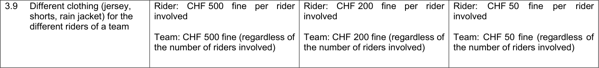
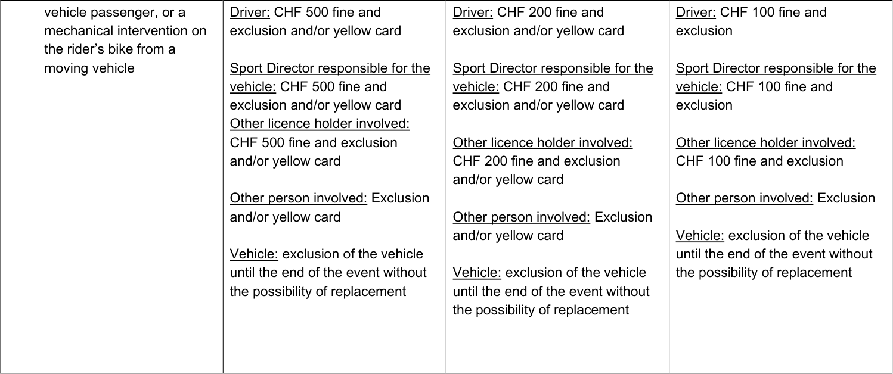

PART II – ROAD RACES
Rules amendments applying on 01.01.2025 Chapter I CALENDAR AND PARTICIPATION
International calendar 2.1.001 Road races are registered on the international calendar in accordance with their classification as per article 2.1.005.
~~UCI WorldTour events are entered on the UCI WorldTour calendar by the~~ ~~Professional Cycling Council.~~
The UCI WorldTour and UCI Women’s WorldTour calendars are established by the Professional Cycling Council and proposed to the UCI Management Committee for approval.
The UCI Management Committee of the UCI enters the other events of the international calendar in one or another class in accordance with the criteria which it shall draw up.
As a general rule, the international calendar and the road cycling season shall start on the day following the conclusion of the previous year’s final UCI World Championships event or WorldTour event and end upon conclusion of the final UCI WorldTour or World Championships event of the year in question.
The dates of the international calendar and the road cycling season shall be set annually by the UCI Management Committee, which will take into account the above as well as specificities regarding the events registered on the calendar.
(text modified on 1.01.02; 1.01.05; 1.01.17; 23.10.19, 1.01.25)
Allée Ferdi Kübler 12 1860 Aigle Switzerland
T: +41 24 468 58 11 E: admin@uci.ch
Page 1 / 57
2.1.004 A mixed team is composed exclusively of riders belonging to different club teams eligible for participation according to article 2.1.005 and registered for a specific event.
Riders registered with UCI teams are not authorised to be part of a mixed team. Teams registered with the UCI are not authorised to form mixed teams.
The same mixed team shall not be authorised to take part in more than one event per season, unless authorised by the UCI prior to the organiser’s enrolment confirmation.
Riders of a mixed team shall wear the same jersey, which may bear advertising for their usual sponsor. It may not be a national jersey. The name of the mixed team shall be composed of the names of the riders’ club teams.
(text modified on 1.01.99; 1.01.05; 28.04.05; 1.01.07; 12.06.20; 01.01.25).
2.1.005 International races and participation
| International Calendar |
Category of event |
Cla ss |
Participation |
|---|---|---|---|
| Olympic games | ME WE |
JO | - As per part XI |
| World championships | ME WE MU WU MJ WJ |
CM | - National teams, in accordance with the world championships (see part IX) |
| Continental championships |
ME WE MU WU MJ WJ |
CC | - National teams, in accordance with the continental championships (see part X) |
| Continental games | Continental games | JC | - National teams, in accordance with the specific regulations of the event |
| Regional games | Regional games | JR | - National teams, in accordance with the regional games (see part X) |
(text modified on 1.01.99; 1.01.05; 1.01.06; 1.10.06; 25.09.07; 1.01.08; 1.1.09; 1.07.09; 1.10.09; 1.10.10; 1.07.11; 1.07.12; 1.10.13; 1.01.14; 1.01.15; 1.01.16; 12.01.17; 1.02.17; 1.01.18; 23.10.19; 1.01.20; 9.11.20; 1.01.24 ; 1.07.24, 1.01.25).
Allée Ferdi Kübler 12 1860 Aigle Switzerland
T: +41 24 468 58 11 E: admin@uci.ch
Page 2 / 57
Chapter II GENERAL PROVISIONS § 2 Organisation
Security 2.2.015 Event safety manager The organiser shall appoint an event safety manager as part of its organisation staff, whose role is defined in the organisers’ guide to road events as published by the UCI.
The event safety manager will assess the risks of the event and oversee the observance of the safety regulations set out by both the national authorities and the sporting authorities (UCI, National Federation, etc.).
The organiser shall ensure that the event safety manager has a good knowledge of the organisation and safety procedures of cycling events, has the relevant regulatory training to carry out his duties and has successfully passed the UCI examination. The name of the event safety manager must be included in the organisation chart published in the technical guide.
The Event Safety Manager must always be readily and visibly identifiable, distinguished by a clearly marked uniform or badge that sets them apart from other organisation staff members.
Chapter III ONE-DAY RACES
Distances 2.3.002 The maximum distance for one-day road races shall be as follows:
| International Calendar | Category | Class | Distance |
|---|---|---|---|
| Olympic games and world championships (Distances are subject to the course _profile) _ |
ME WE MU WU MJ WJ |
From 250 to 280 km From~~130 to 160 km~~ 150 to 180 km From150~~ 160 ~~to 180 km From 110 to 140 km From110~~ 120 ~~to 140 km From70~~60 ~~to100~~80~~ km |
|
| Continental championships, continental games, regional games and national championships |
ME MU WE WU MJ WJ |
Maximum 240 km Maximum 180 km Maximum 140 km Maximum 120 km Maximum 140 km Maximum 80 km |
|
| UCI WorldTour | ME | UWT | Distance determined by the Professional Cycling Council |
| UCI Continental Circuits | ME ME ME MU |
1.Pro 1.1 1.2 1.2 |
Maximum 200 km Maximum 200 km Maximum 180 km Maximum 180 km |
| Women Elite | WE WE WE WE |
WWT 1.Pro 1.1 1.2 |
Maximum 160 km Maximum 140 km Maximum 140 km Maximum 140 km |
Allée Ferdi Kübler 12 1860 Aigle Switzerland
T: +41 24 468 58 11 E: admin@uci.ch
Page 3 / 57
| Men Junior | MJ MJ |
1. Ncup 1.1 |
Maximum 140 km Maximum 140 km |
|---|---|---|---|
| Women Junior | WJ WJ |
1.Ncup 1.1 |
Maximum 80 km Maximum 80 km |
* Except with the prior permission of the UCI Management Committee.
(text modified on 1.01.05; 1.01.08; 1.01.09; 1.07.12; 1.10.13; 1.01.16; 1.01.17; 1.01.18; 23.10.19; 9.11.20 ; 1.01.25).
2.3.011 At world championships and olympic games, identification numbers shall be distributed on the day before the road race or two days before. The numbering of the start list will be as follows:
Men Elite
1. the nation which won the world champion title at the previous world championships and the olympic champion title at the previous olympic games; 2. the other nations in the order of the last published men’s UCI world ranking by nation; 3. the start order of nations which are not ranked in the men’s UCI world ranking shall be determined by drawing lots.
Women Elite
1. the nation which won the world champion title at the previous world championships and the olympic champion title at the previous olympic games; 2. the other nations in the order of the last published women’s UCI world ranking by nation; 3. the start order of nations which are not ranked in the women’s UCI world ranking shall be determined by drawing lots.
Men Under 23
1. the nation which won the previous world champion title; 2. the nations ranked according to the latest standings of the Under 23 nations’ cup ; 3. the start order of nations which are not ranked in the Under 23 nations’ cup shall be determined by drawing lots.
Women Under 23
1. the nation which won the previous world champion title 2. the nations ranked according to the last published women’s UCI world ranking Under 23 by nation; 3. the start order of nations which are not ranked in the women’s Under 23 UCI world ranking by nations shall be determined by drawing lots.
Men Junior
1. the nation which won the previous world champion title; 2. the nations ranked according to the latest standings of the men junior nations’ cup;
Allée Ferdi Kübler 12 1860 Aigle Switzerland
T: +41 24 468 58 11 E: admin@uci.ch
Page 4 / 57
3. the start order of nations which are not ranked in the men junior nations’ cup shall be determined by drawing lots.
Women Junior
1. the nation which won the previous world champion title; 2. the nations ranked according to the latest standings of the women junior nations’ cup; 3. the start order of nations which are not ranked in the women junior nations’ cup shall be determined by drawing lots.
The number one bib shall be allotted to the outgoing world champion for the world championships and the outgoing olympic champion for the olympic games.
The numbers of the nations shall be allotted according to the riders’ alphabetical order.
The nations shall be called to the starting line according to the numbering of the start list.
(text modified on 1.01.00; 1.01.08; 1.01.09; 1.08.13; 1.01.16; 1.07.18; 01.01.25).
2.3.023 During world championships, only the vehicles mentioned below shall be authorised to drive in the race:
1. the car of the president of the commissaires panel; 2. the second commissaire’s car; 3. the third commissaire’s car; 4. the fourth commissaire’s car; 5. six UCI cars; 6. the doctor’s car; 7. ~~two~~ three ambulances; 8. the police car, if necessary; 9. the nations’ cars plus four cars and one motorcycle providing neutral support; 10. a maximum of three camera motor-cycles and one sound motor cycle; 11. the two commissaire’s motorcycles; 12. the two photographers’ motorcycles; 13. the regulator(s)’ motorcycle(s); 14. the two information motorcycles; 15. the doctor’s motorcycle; 16. the time board motorcycle; 17. the police motor-cycles; 18. the broom wagon;
During Olympic Games, only the vehicles mentioned below shall be authorised to
drive in the race: 1. the car of the president of the commissaires panel 2. the second commissaire’s car 3. the third commissaire’s car 4. the fourth commissaire’s car
Allée Ferdi Kübler 12 1860 Aigle Switzerland
T: +41 24 468 58 11 E: admin@uci.ch
Page 5 / 57
5. the organizing committee manager’s car 6. the UCI technical delegate’s car 7. the doctor's car 8. ~~two~~ three ambulances 9. the police car 10. the nations’ cars, plus four neutral support cars and one neutral support motor-cycle 11. a maximum of three camera motor-cycles and one sound motor cycle 12. the two commissaire’s motorcycles
(text modified on 1.01.02; 30.01.04; 1.01.05, 1.01.08; 1.09.13 ; 1.05.17 ; 1.01.25)
Feeding zones signposted by the organiser 2.3.025 In one-day races or stage races the organisers ~~can~~ must implement zones for teams to supply their riders. These feeding zones will be signposted in this case. They shall be of sufficient length to allow supply operations to proceed smoothly with a minimum of 50 metres per team. Feed zones shall be located on slightly uphill sections and, as far as possible, outside urban areas.
The food and drink shall be distributed on foot by a member of team ~~the~~ staff ~~accompanying~~ holding a UCI licence and by no-one else. Staff supplying the riders must wear team’s clothing which ensures identification and stand at a maximum of one meter from the side of the road it shall be marked with a line on the road. They shall be positioned on one side of the road only, which must be the side on which road traffic circulates in the country concerned.
Each feeding zone ~~should be~~ must be placed approximately every 30 to 40 kilometers and accompanied by a zone for waste situated just before and just after the feeding zone where riders can get rid of their waste.
Litter zones Organisers must provide several litter zones of sufficient length situated every 30-40 kilometres throughout the route of the event or stage. A final litter zone shall be provided in the last kilometres of a race or stage and before the final section.
Litter zones allow the riders to get rid of their waste in a way that respects the environment. The organiser shall arrange for the litter to be collected and the various zones cleaned after the race has passed through.
(text modified on 1.01.05; 1.01.20; 1.04.21; 01.01.25).
Feeding riders from team cars 2.3.025 bis ~~In events or stages over a distance not exceeding 150 km,~~ It is recommended that riders be supplied with refreshments ~~only~~ from the team car or neutral service (car or moto). The refreshments may be provided either with musettes or bidons.
Riders shall move slowly up level with their sports director’s car. Food and drink shall be provided exclusively behind the commissaire's car and in no case in or behind the bunch.
Allée Ferdi Kübler 12 1860 Aigle Switzerland
T: +41 24 468 58 11 E: admin@uci.ch
Page 6 / 57
If a group of 15 riders or less has broken away from the bunch, food and drink may be supplied at the rear of that group.
(text modified on 1.01.20; 8.02.21; 01.01.25).
~~Feeding riders outside of the feeding zones signposted by the organiser~~ ~~2.3.026~~ ~~Feeding riders outside of the feeding zones signposted by the organiser is allowed~~
~~on foot by the staff accompanying the team and by no-one else. Staff are allowed to~~ ~~supply riders with bidons or musettes.~~
~~Staff supplying the riders must wear team’s clothing and stand at a maximum of one~~ ~~meter from the side of the road. They shall be positioned on one side of the road only,~~ ~~which must be the side on which road traffic circulates in the country concerned.~~
~~(text modified on 1.01.05; 1.01.15; 1.01.20; 8.02.21A~~ rticle abrogated 1.01.25)
Chapter IV INDIVIDUAL TIME TRIALS
Distances 2.4.001 The distances shall be the following:
| Category | Col2 | Maximum distance | Col4 |
|---|---|---|---|
| Category | Category | World championships and Olympic Games (Distances are subject to the _course profile) _ |
Other events |
| Men | Elite | ~~40~~35-50 km | 80 km |
| Men | Under 23 | 30-40 km | 40 km |
| Men | Junior | 20-30 km | 30 km |
| Women | Elite | ~~20-30 km~~30-40 km | 40 km |
| Women | Under 23 | 20-30 km | 30 km |
| Women | Junior | 10-15 km | 15 km |
(text modified on 1.01.05; 1.01.07 ; 1.01.25).
Chapter V TEAM TIME TRIALS
Distances 2.5.002 The distances for team time trial races shall be:
| Category | Col2 | Maximum distance | Col4 |
|---|---|---|---|
| Category | Category | World championships | Other events |
| Men | Elite | 100 km | |
| Men | Under 23 | 80 km | |
| Men | Junior | 70 km | |
| Women: | Elite | 50 km | |
| Women: | Under 23 | 50 km | |
| Women: | Junior | 30 km |
Allée Ferdi Kübler 12 1860 Aigle Switzerland
T: +41 24 468 58 11 E: admin@uci.ch
Page 7 / 57
(text modified on 1.01.05; 1.01.07; 1.07.12; 1.08.13; 1.01.19; 1.01.25).
Chapter VI STAGES RACES
Finish 2.6.027 In the case of a duly noted incident in the last three kilometres of a road race stage, the rider or riders affected shall be credited with the time of the rider or riders in whose company they were riding at the moment of the incident. His or their placing shall be determined by the order in which he or they actually cross the finishing line.
Is considered as an incident, any event independent of the rider’s control or from ~~the~~ his physical capacity ~~of the rider~~ (fall involving several riders, mechanical problem, puncture) and his will of remaining with the riders in whose company he was riding at the moment of the incident.
Riders affected by an incident, within the meaning of the preceding paragraph, are asked to make themselves known to a commissaire by rising their hand and report to a commissaire after the finish of the stage.
If, as the result of a duly noted fall and involving several riders in the last three kilometres, a rider cannot cross the finishing line, he shall be placed last in the stage and credited with the time of the rider or riders in whose company he was riding at the time of the fall.
This article shall not apply where the finish is at the top of a hill-climb.
Decisions related to this article are taken independently by the commissaires’ panel.
The UCI may decide to extend the distance from three kilometres to five kilometres upon request and if justified by the specific circumstances of the stage, in particular for safety reasons. The organiser of the event and any other stakeholder involved in the event may apply for such extension and submit relevant documentation for assessment of the application, including course map, stage profile, GPX file and any other relevant information or requested by the UCI.
Applications from the organiser of the event must in principle be submitted prior to the publication of the technical guide. If the application is accepted, the details must be included in the special regulations of the event.
In case an application is approved after the publication of the technical guide, the details must be published in a race communique prior to the start of the stage.
Allée Ferdi Kübler 12 1860 Aigle Switzerland
T: +41 24 468 58 11 E: admin@uci.ch
Page 8 / 57
( text modified on 1.01.05; 1.10.11; 1.02.12; 1.01.18; 1.01.25 ).
2.6.027bis In addition to the timing tape at the finish line, the timing service provider shall provide a timing tape at the three-kilometre sign (or other distance accepted by the UCI pursuant to article 2.6.027 to identify the riders in each group and their time gaps.
(Article introduced on 1.01.25)
Finishing deadline 2.6.032 Any rider arriving outside the finishing time limit set for the event in question and published in the event's specific regulations will be disqualified. The finishing deadline shall be set in the specific regulations for each race in accordance with the characteristics of the stage.
In exceptional cases only, unpredictable and of force majeure, the commissaires panel may extend the finishing time limits after consultation with the organiser and thus allow riders who have actually arrived out of the time limit to take the start of the next stage.
In case riders ~~actually~~ out of the time limit are given a second chance by the president of the commissaires panel, all points awarded in the general classifications of the various secondary classifications shall be withdrawn.
(Text modified on 1.01.02; 1.01.09; 1.10.09; 1.07.10; 1.02.12; 1.01.18 ; 1.01.25).
2.6.032bis The President of the Commissaires Panel may, in situations where stage times are not taken at the finish line in application of article 2.2.029, set a maximum time limit for riders to cross the finish line, after consultation with the organiser. Riders crossing the finish line outside this time limit will be disqualified. Riders must be informed of the applicable time limit via the commissaires' communique when the time limit is set before the start of the stage, and by radio-tour when it is set after the start of the stage. The commissaires may decide not to apply this time limit in the event of an incident occurring between the stage time-taking point and the finish line.
(Article introduced on 1.01.25)
Chapter X UCI RANKINGS
§ 1 Elite and Under 23 Men’s UCI World Ranking
Scale of points 2.10.008 General provisions
The awarding of points for stage races is in accordance with article 2.6.001 regarding the duration of the event. For team time trial events and stages the points on the scale shall be awarded to the team. These points shall be divided equally between the riders finishing the event or the stage. Calculations shall be rounded to a hundredth of a point.
Allée Ferdi Kübler 12 1860 Aigle Switzerland
T: +41 24 468 58 11 E: admin@uci.ch
Page 9 / 57
Final results in UCI WorldTour events
| Position | Tour de Fran ce |
Giro d'Italia, La Vuelta Ciclista a España |
Milano-San Remo, Ronde van Vlaanderen- Tour des Flandres, Paris- Roubaix, Liège- Bastogne- Liège, Il Lombardia |
Santos Tour Down Under, Paris - Nice, Tirreno - Adriatico, Gent – Wevelgem in Flanders Fields, Amstel Gold Race, Critérium du Dauphiné, Tour de Romandie, Tour de Suisse, Grand Prix Cycliste de Québec, Grand Prix Cycliste de Montréal |
Volta Ciclista a Catalunya, E3 Saxo Bank Classic, Itzulia Basque Country, La Flèche Wallonne, Donostia San Sebastian Klasikoa, Tour de Pologne, Benelux Tour, BEMER Cyclassics, Bretagne Classic – Ouest-France, Strade Bianche |
Cadel Evans Great Ocean Road Race, UAE Tour, Omloop Het Nieuwsblad Elite, AG Driedaagse Brugge - De Panne, Dwars door Vlaanderen - A travers la Flandres, Eschborn- Frankfurt, Gree – Tour of Guangxi Copenhagen Sprint |
|---|---|---|---|---|---|---|
| **1 ** | 1300 | 1100 | 800 | 500 | 400 | 300 |
| **2 ** | 1040 | 885 | 640 | 400 | 320 | 250 |
| **3 ** | 880 | 750 | 520 | 325 | 260 | 215 |
| **4 ** | 750 | 600 | 440 | 275 | 220 | 175 |
| **5 ** | 620 | 495 | 360 | 225 | 180 | 120 |
| **6 ** | 520 | 415 | 280 | 175 | 140 | 115 |
| **7 ** | 425 | 340 | 240 | 150 | 120 | 95 |
| **8 ** | 360 | 285 | 200 | 125 | 100 | 75 |
| **9 ** | 295 | 235 | 160 | 100 | 80 | 60 |
| 10 | 230 | 180 | 135 | 85 | 68 | 50 |
| 11 | 190 | 155 | 110 | 70 | 56 | 40 |
| 12 | 165 | 130 | 95 | 60 | 48 | 35 |
| 13 | 140 | 110 | 85 | 50 | 40 | 30 |
| 14 | 110 | 90 | 65 | 40 | 32 | 25 |
| 15 | 100 | 80 | 55 | 35 | 28 | 20 |
| 16 | 90 | 75 | 50 | 30 | 24 | 20 |
| 17 | 85 | 70 | 50 | 30 | 24 | 20 |
| 18 | 80 | 60 | 50 | 30 | 24 | 20 |
| 19 | 70 | 55 | 50 | 30 | 24 | 20 |
| 20 | 60 | 50 | 50 | 30 | 24 | 20 |
| 21 | 50 | 50 | 30 | 20 | 16 | 12 |
| 22 | 50 | 50 | 30 | 20 | 16 | 12 |
| 23 | 50 | 50 | 30 | 20 | 16 | 12 |
| 24 | 50 | 50 | 30 | 20 | 16 | 12 |
| 25 | 50 | 50 | 30 | 20 | 16 | 12 |
| 26 | 40 | 30 | 30 | 20 | 16 | 12 |
| 27 | 40 | 30 | 30 | 20 | 16 | 12 |
| 28 | 40 | 30 | 30 | 20 | 16 | 12 |
| 29 | 40 | 30 | 30 | 20 | 16 | 12 |
| 30 | 40 | 30 | 30 | 20 | 16 | 12 |
Allée Ferdi Kübler 12 1860 Aigle Switzerland
T: +41 24 468 58 11 E: admin@uci.ch
Page 10 / 57
| Position | Tour de Fran ce |
Giro d'Italia, La Vuelta Ciclista a España |
Milano-San Remo, Ronde van Vlaanderen- Tour des Flandres, Paris- Roubaix, Liège- Bastogne- Liège, Il Lombardia |
Santos Tour Down Under, Paris - Nice, Tirreno - Adriatico, Gent – Wevelgem in Flanders Fields, Amstel Gold Race, Critérium du Dauphiné, Tour de Romandie, Tour de Suisse, Grand Prix Cycliste de Québec, Grand Prix Cycliste de Montréal |
Volta Ciclista a Catalunya, E3 Saxo Bank Classic, Itzulia Basque Country, La Flèche Wallonne, Donostia San Sebastian Klasikoa, Tour de Pologne, Benelux Tour, BEMER Cyclassics, Bretagne Classic – Ouest-France, Strade Bianche |
Cadel Evans Great Ocean Road Race, UAE Tour, Omloop Het Nieuwsblad Elite, AG Driedaagse Brugge - De Panne, Dwars door Vlaanderen - A travers la Flandres, Eschborn- Frankfurt, Gree – Tour of Guangxi Copenhagen Sprint |
|---|---|---|---|---|---|---|
| 31 | 35 | 25 | 15 | 10 | 8 | 5 |
| 32 | 35 | 25 | 15 | 10 | 8 | 5 |
| 33 | 35 | 25 | 15 | 10 | 8 | 5 |
| 34 | 35 | 25 | 15 | 10 | 8 | 5 |
| 35 | 35 | 25 | 15 | 10 | 8 | 5 |
| 36 | 35 | 25 | 15 | 10 | 8 | 5 |
| 37 | 35 | 25 | 15 | 10 | 8 | 5 |
| 38 | 35 | 25 | 15 | 10 | 8 | 5 |
| 39 | 35 | 25 | 15 | 10 | 8 | 5 |
| 40 | 35 | 25 | 15 | 10 | 8 | 5 |
| 41 | 25 | 20 | 15 | 10 | 8 | 5 |
| 42 | 25 | 20 | 15 | 10 | 8 | 5 |
| 43 | 25 | 20 | 15 | 10 | 8 | 5 |
| 44 | 25 | 20 | 15 | 10 | 8 | 5 |
| 45 | 25 | 20 | 15 | 10 | 8 | 5 |
| 46 | 25 | 20 | 15 | 10 | 8 | 5 |
| 47 | 25 | 20 | 15 | 10 | 8 | 5 |
| 48 | 25 | 20 | 15 | 10 | 8 | 5 |
| 49 | 25 | 20 | 15 | 10 | 8 | 5 |
| 50 | 25 | 20 | 15 | 10 | 8 | 5 |
| 51 | 20 | 15 | 10 | 5 | 4 | 2 |
| 52 | 20 | 15 | 10 | 5 | 4 | 2 |
| 53 | 20 | 15 | 10 | 5 | 4 | 2 |
| 54 | 20 | 15 | 10 | 5 | 4 | 2 |
| 55 | 20 | 15 | 10 | 5 | 4 | 2 |
| 56 | 15 | 10 | 5 | 3 | 2 | 1 |
| 57 | 15 | 10 | 5 | 3 | 2 | 1 |
| 58 | 15 | 10 | 5 | 3 | 2 | 1 |
| 59 | 15 | 10 | 5 | 3 | 2 | 1 |
| 60 | 15 | 10 | 5 | 3 | 2 | 1 |
Allée Ferdi Kübler 12 1860 Aigle Switzerland
T: +41 24 468 58 11 E: admin@uci.ch
Page 11 / 57
~~§ 4 UCI Women’s WorldTour ranking~~ ~~(paragraph moved from chapter XIII on 1.01.19).~~
~~Overall individual classification~~ ~~2.10.032~~ ~~UCI Women’s WorldTour points are awarded for the final classification of each event~~
~~according to the following scale:~~
~~Points awarded for stages shall be recorded on the last day of the event.~~ ~~The awarding of points for stage races is in accordance with article 2.6.001~~ ~~regarding the duration of the event.~~
~~For team time trial events and stages the points on the scale shall be awarded to the~~ ~~team. These points shall be divided equally between the riders finishing the event or~~ ~~the stage. Calculations shall be rounded to a hundredth of a point.~~
~~(text modified on 17.06.24)~~ (Article abrogated 01.1.25)
~~Points scale~~ ~~2.10.033~~ ~~Final classification of each event~~
| Position | UCI Women’s WorldTour |
|---|---|
| ~~1 ~~ | ~~400~~ |
| ~~2 ~~ | ~~320~~ |
| ~~3 ~~ | ~~260~~ |
| ~~4 ~~ | ~~220~~ |
| ~~5 ~~ | ~~180~~ |
| ~~6 ~~ | ~~140~~ |
| ~~7 ~~ | ~~120~~ |
| ~~8 ~~ | ~~100~~ |
| ~~9 ~~ | ~~80~~ |
| ~~10~~ | ~~68~~ |
| ~~11~~ | ~~56~~ |
| ~~12~~ | ~~48~~ |
| ~~13~~ | ~~40~~ |
| ~~14~~ | ~~32~~ |
| ~~15~~ | ~~28~~ |
| ~~16~~ | ~~24~~ |
| ~~17~~ | ~~24~~ |
| ~~18~~ | ~~24~~ |
| ~~19~~ | ~~24~~ |
| ~~20~~ | ~~24~~ |
| ~~21~~ | ~~16~~ |
| ~~22~~ | ~~16~~ |
| ~~23~~ | ~~16~~ |
| ~~24~~ | ~~16~~ |
| ~~25~~ | ~~16~~ |
| ~~26~~ | ~~16~~ |
| ~~27~~ | ~~16~~ |
| ~~28~~ | ~~16~~ |
| ~~29~~ | ~~16~~ |
Allée Ferdi Kübler 12 1860 Aigle Switzerland
T: +41 24 468 58 11 E: admin@uci.ch
Page 12 / 57
| Position | UCI Women’s WorldTour |
|---|---|
| ~~30~~ | ~~16~~ |
| ~~31~~ | ~~8 ~~ |
| ~~32~~ | ~~8 ~~ |
| ~~33~~ | ~~8 ~~ |
| ~~34~~ | ~~8 ~~ |
| ~~35~~ | ~~8 ~~ |
| ~~36~~ | ~~8 ~~ |
| ~~37~~ | ~~8 ~~ |
| ~~38~~ | ~~8 ~~ |
| ~~39~~ | ~~8 ~~ |
| ~~40~~ | ~~8 ~~ |
~~Stages and half stages~~
| Position | UCI Women’s WorldTour |
|---|---|
| ~~1 ~~ | ~~50~~ |
| ~~2 ~~ | ~~40~~ |
| ~~3 ~~ | ~~30~~ |
| ~~4 ~~ | ~~25~~ |
| ~~5 ~~ | ~~20~~ |
| ~~6 ~~ | ~~18~~ |
| ~~7 ~~ | ~~15~~ |
| ~~8 ~~ | ~~10~~ |
| ~~9 ~~ | ~~8 ~~ |
| ~~10~~ | ~~6 ~~ |
~~Wearing the race leader's jersey per stage~~
| Position | UCI Women’s WorldTour |
|---|---|
| ~~Leader~~ | ~~8 ~~ |
~~(text modified on 23.10.19). (~~ Article abrogated 01.1.25)
Chapter XII RACE INCIDENTS AND SPECIFIC INFRINGEMENTS BY ORGANISERS
(chapter introduced on 1.01.19).
Yellow cards 2.12.003 Commissaires shall issue yellow cards in situations provided for in article 2.12.007 bis whenever the behaviour concerned is susceptible of causing a risk for safety. The commissaires shall assess the behaviour of the licence-holder concerned to determine if it was susceptible of causing a risk for safety and, if so, shall issue a yellow card. Where the behaviour warrants the other sanctions provided for in the
Allée Ferdi Kübler 12 1860 Aigle Switzerland
T: +41 24 468 58 11 E: admin@uci.ch
Page 13 / 57
table of race incidents being applied, the yellow card shall be issued in addition to the other sanctions. Where the behaviour does not warrant the other sanctions provided in the table of race incidents being applied, the yellow card shall be issued in isolation.
Yellow cards shall only be issued to individuals. In cases where sanctions are imposed under article 2.12.007 ~~but~~ and the person who carried out the relevant action cannot be identified; ~~a yellow card shall not be part of the sanctions imposed. t~~ he Sport Director in charge of the team shall be required to identify such person and inform the commissaires’ panel accordingly. In case of failure to do so, a fine of CHF 2'000 shall be imposed on the team or the Sport Director in charge of the team.
Yellow cards shall be noted in the communiqué of the commissaires’ panel.
Between 1 August 2024 and 31 December 2024, yellow cards may be issued in the context of the following events: UCI WorldTour, and UCI Women’s WorldTour. As from 1 January 2025, yellow cards may then be issued at the following events: UCI WorldTour, UCI Women’s WorldTour, UCI ProSeries (ME and WE), Olympic Games, UCI World Championships (Elite and U23) and Continental Championships (Elite and U23).
(article introduced on 01.08.2024; modified on 01.01.25)
Chapter XIII UCI WOMEN’S WORLDTOUR
§ 1 UCI Women’s WorldTour
General observations 2.13.001 The UCI Women’s WorldTour is a series of high-level road events registered on the UCI Women’s WorldTour calendar in which the UCI Women’s WorldTeams, a number of UCI Women’s ProTeams and UCI women’s continental teams are eligible for participation.
(article introduced on 1.01.18; text modified on 1.01.19; 1.01.25).
Participation 2.13.005 The UCI Women’s WorldTour events shall be open to UCI Women’s WorldTeams,
UCI Women’s ProTeams and UCI women’s continental teams in accordance with article 2.1.005 of the UCI Regulations. The maximum number of teams at the start of a UCI Women’s WorldTour event is set at 24 teams.
(text modified on 1.01.25).
§ 2 UCI Women’s WorldTour calendar (paragraph introduced on 1.07.17).
2.13.007 The UCI Women’s WorldTour calendar shall be made up of a certain number of
events known as UCI Women’s WorldTour events. ~~The UCI Women’s WorldTour~~ ~~calendar is established by the UCI Management Committee on a yearly basis, based~~ ~~on the criteria it determines.~~
The events of the UCI Women’s WorldTour are grouped as follows:
Allée Ferdi Kübler 12 1860 Aigle Switzerland
T: +41 24 468 58 11 E: admin@uci.ch
Page 14 / 57
- Stage races.
- One-day races.
(text modified on 1.01.19, 1.01.25).
~~Candidature for first registration on the UCI Women’s WorldTour calendar~~ 2.13.008 ~~The conditions for the registration on the UCI Women’s WorldTour calendar for an~~ ~~event which is not, the previous season, registered on the UCI Women’s WorldTour~~ ~~Calendar shall be specified in the candidates’ guide established by the UCI~~ ~~Management Committee.~~
~~To be considered, the candidature will have to fulfil all conditions established by the~~ ~~candidates guide and include a complete bid file as well as all additional documents~~ ~~required. The documents required in the candidates’ guide shall be taken into~~ ~~consideration by the UCI Management Committee when deciding to accept or refuse~~ ~~a candidature.~~
The UCI Women’s WorldTour calendar is established by the Professional Cycling Council and proposed to the UCI Management Committee for approval on a yearly basis, in consideration of the criteria set out in the UCI Regulations.
Without restricting the competence of the UCI Management Committee and Professional Cycling Council with regard to the UCI Women’s WorldTour calendar, in principle, the UCI Women’s WorldTour should not have overlapping events.
(text modified on 1.01.19; 1.01.25).
2.13.009 ~~The entity applying for registration of an event on the UCI Women’s WorldTour~~ ~~calendar shall be the owner of the UCI ProSeries event held the year preceding the~~ ~~registration, without prejudice to exceptional authorisations granted by the UCI~~ ~~Management Committee.~~
Application for registration on the UCI Women’s WorldTour calendar The conditions for the submission of an application for registration on the UCI Women’s WorldTour calendar shall be specified in the present regulations and may be supplemented by the UCI Management Committee upon proposal by the Professional Cycling Council.
The entity applying for registration of an event on the UCI Women’s WorldTour calendar shall be the owner of an event held the year preceding the first year of registration and classed as a UCI Women’s WorldTour or UCI Women’s ProSeries event. The Professional Cycling Council may propose to the UCI Management Committee to grant exceptions to such rule upon receipt of a reasoned request.
(text modified on 1.01.19; 1.01.25).
2.13.010 By applying for registration on the UCI Women’s WorldTour calendar, the owner of
the event acknowledges being bound by the UCI Regulations as from the submission of the application and for the duration of the registration as a UCI Women’s WorldTour event. The owner of the event shall be entirely responsible for its event with regard to the UCI and the UCI regulations.
( text modified on 1.01.19)
Allée Ferdi Kübler 12 1860 Aigle Switzerland
T: +41 24 468 58 11 E: admin@uci.ch
Page 15 / 57
~~Registration for current UCI Women’s WorldTour events~~ 2.13.011 ~~All events registered on the UCI Women’s WorldTour calendar during the current~~
~~season shall submit its application for registration for the next season by completing~~ ~~and returning the form prepared by the UCI.~~
The registration is granted for a specific event. The registration grants UCI Women’s WorldTour status to the event. Registration has no impact on the property rights of the event owner as regards the event, without prejudice to obligations stemming from the UCI regulations.
(text modified on 1.01.25).
2.13.012 ~~The UCI Management Committee shall examine the applications for registration on~~
~~the basis of documentation consisting of the following elements:~~ ~~1. the registration application form;~~ ~~2. any additional documents required by the UCI;~~ ~~3. the opinion of the UCI administration and/or any entity created for reviewing~~
~~applications.~~
In addition to meeting the conditions set out in the regulations, the following selection criteria shall be taken into consideration by the Professional Cycling Council and UCI Management Committee in deciding to refuse an application, submit the registration to the respect of conditions and/or measures considered appropriate or reduce its duration:
- the sporting level on the basis of the start list of the event in the editions prior to assessment of the application;
- the format, the structure and the type of the event contributing to the image of the UCI Women’s WorldTour as an elite competition;
- the sporting ambition and coherence of the event within the UCI Women’s WorldTour calendar;
- the quality of organisation, particularly as regards to the safety of the riders, race followers and spectators;
- the technical quality of TV production and observance of the UCI TV production guidelines;
- the levels of live international and host country television coverage and audience figures in the editions prior to assessment of the application;
- the levels of interest on social media in the editions prior to assessment of the application;
- compliance with the UCI cycling regulations and all applicable regulations and respect of the organisation guides, specifications or guidelines published by the UCI;
- compliance with contractual, legal and regulatory obligations;
- respect of the UCI, other stakeholders or third parties in accordance with requirements of the UCI Regulations and/or UCI Financial Obligations;
- the absence of any attempt to breach or bypass any of the above-mentioned regulatory, contractual or legal obligations;
- compliance with sporting ethics;
- the absence of any other element liable to damage the image of the UCI Women’s WorldTour and the sport of cycling in general.
Allée Ferdi Kübler 12 1860 Aigle Switzerland
T: +41 24 468 58 11 E: admin@uci.ch
Page 16 / 57
The eligibility criteria for submitting an application for registration on the UCI Women’s WorldTour calendar are defined above and may be adapted by the UCI Management Committee on proposal by the Professional Cycling Council if necessary.
Whenever the assessment of criteria covers several years, the period, as a general rule, shall be over the last two editions at the time of assessment or submission of information.
The Professional Cycling Council and UCI Management Committee shall take into consideration information submitted by the applicant as well as any information collected by the UCI or any facts which are acknowledged.
(text modified on 1.01.25).
~~Common provisions for candidature and registration on the UCI Women’s~~ ~~WorldTour calendar~~ 2.13.013 ~~The deadline for submission of registration applications and candidatures is set in the~~
~~candidates guide. The UCI Management Committee shall have no obligation to~~ ~~examine applications sent to the UCI passed the deadline.~~
The applicant shall submit the application for registration by completing and returning the form drafted by the Professional Cycling Council including all the information or other documents as required by the council.
(text modified on 1.01.25)
2.13.014 ~~The approval of a registration application or candidature is granted for a specific event~~
~~for a defined season. The registration grants UCI Women’s WorldTour status to the~~ ~~event.~~
The deadline for the submission of the application for registration is set by the Professional Cycling Council.
(text modified on 1.01.19; 1.01.25)
2.13.015 ~~The decisions of the UCI Management Committee in relation to applications for~~ ~~registration on the UCI Women’s WorldTour calendar are subject to appeal as per~~ ~~article 1.2.013.~~
~~(text modified on 1.10.21).~~
The Professional Cycling Council shall have no obligation to examine applications sent to the UCI after the date set by the Professional Cycling Council.
( text modified on 1.10.21; 1.01.25 )
Application on proposal of the Professional Cycling Council 2.13.016 On proposal by the UCI or on its own initiative, the Professional Cycling Council may invite events considered to be of strategic importance to the development of cycling to apply for registration on the UCI Women’s WorldTour calendar.
(Text introduced on 1.01.25)
2.13.017 The Professional Cycling Council shall inform the owners of selected events in writing and may notify them a deadline for the provision of all the required documents.
Allée Ferdi Kübler 12 1860 Aigle Switzerland
T: +41 24 468 58 11 E: admin@uci.ch
Page 17 / 57
(Text introduced on 1.01.25)
2.13.018 The owner of an event invited to apply for registration on the UCI Women’s WorldTour calendar by the Professional Cycling Council must submit an application in accordance with the procedure set out in the Professional Cycling Council's notification.
(Text introduced on 1.01.25)
Registration on the UCI Women’s WorldTour calendar 2.13.019 The Professional Cycling Council and UCI Management Committee shall examine the applications for registration on the basis of documentation consisting of the following elements:
- the registration application form and its enclosures;
- the opinion of the UCI and/or any entity created for the purpose of reviewing applications;
- any other document or information provided by the applicant or required for the assessment of the application by the UCI, the Professional Cycling Council or any entity created for the purpose of reviewing applications.
The Professional Cycling Council may also take account of acknowledged facts.
(Text introduced on 1.01.25)
Award ceremonies 2.13.020 ~~The leader of the individual general classification of the UCI Women’s WorldTour, the~~ ~~leader of the best young rider classification of the UCI Women’s WorldTour and the~~ ~~first three riders of the final classification from each event shall be present at the~~ ~~podium for the final awards ceremony.~~
The documentation must be drawn up in French or in English. Documents produced by third parties and drafted in another language must be accompanied by a translation.
The applicant has sole responsibility for ensuring the quality and complete nature of the documentation. The applicant may not, in particular, invoke the fact that they have not been asked by the UCI or the Professional Cycling Council to provide information or documents or that their attention has not been called to gaps or other elements which may be regarded as negative when the application comes to be assessed by the Professional Cycling Council and UCI Management Committee.
(Text modified on 1.01.05; 1.10.13; 5.02.15; 1.01.16; 1.01.19; 01.1.25)
2.13.021 ~~After the awards ceremonies, the leader of the individual UCI Women’s WorldTour~~ ~~general classification, the leaders of the best young rider classification, and the winner~~ ~~of the event shall be required to appear in the press room along with the organiser.~~
The UCI shall forward its opinion or report to the Professional Cycling Council prior to establishing the calendar of the following season and proposing it to the UCI Management Committee for approval. The UCI will have the opportunity to submit
Allée Ferdi Kübler 12 1860 Aigle Switzerland
T: +41 24 468 58 11 E: admin@uci.ch
Page 18 / 57
further opinions to the extent that the applicant adds new elements to the documentation or new elements come to the UCI’s knowledge in any other way.
(text modified on 1.10.13; 1.01.16; 1.01.19, 01.1.25)
~~Leaders’ jerseys of the series~~ 2.13.022 ~~The UCI awards UCI Women’s WorldTour leader's jerseys to the leaders of the~~
~~individual classification and best young rider classification. Where applicable, the~~ ~~jersey shall carry the name and/or logo of the sponsor of the UCI Women’s~~ ~~WorldTour. Unless otherwise specified, the jersey must be worn in UCI Women’s~~ ~~WorldTour events and in no other event.~~
~~If a rider is the leader of both the UCI Women’s WorldTour individual classification~~ ~~and the best young rider classification, the rider will wear the UCI Women’s WorldTour~~ ~~leader’s jersey.~~
~~The order of priority established in article 1.3.071 must be respected.~~
The Professional Cycling Council shall decide, at its own discretion, whether additional documentation and information shall be requested from the applicant. In this respect, the Professional Cycling Council shall set the pertinent deadlines and may also summon the applicant to a hearing.
(text modified on 1.01.05; 1.09.05; 1.10.13; 1.01.16; 1.01.17; 1.01.19, 01.1.25)
2.13.023 ~~Prizes~~ ~~At the end of each season of the UCI Women’s WorldTour, the UCI awards a trophy~~ ~~to the first three riders in the UCI Women’s WorldTour as well as to the best young~~ ~~rider and the best team in the UCI Women’s WorldTour.~~
As a general rule, the decisions regarding the applications for registration on the UCI WorldTour and UCI Women’s WorldTour calendar shall be taken on the same occasion and shall be communicated to the applicants as rapidly as possible.
The Professional Cycling Council may also examine applications for registration on the UCI Women’s WorldTour calendar on separate occasions or postpone the assessment of certain applications, if it deems so appropriate and, in particular, if additional documentation is required from the applicant or the UCI.
(text modified on 1.01.19, 1.01.25)
~~2.13.024~~ ~~The decisions of the Professional Cycling Council in relation to applications for~~ ~~registration on the UCI WorldTour calendar are final and not subject to appeal.~~
~~(article introduced on 12.01.17).~~ (article abrogated 01.1.25)
Allée Ferdi Kübler 12 1860 Aigle Switzerland
T: +41 24 468 58 11 E: admin@uci.ch
Page 19 / 57
Calendar fee 2.13.025 An annual calendar fee is determined by the UCI Management Committee. The amount of the fee must be paid by UCI Women’s WorldTour events annually within 15 days after receiving the invoice form the UCI.
If the UCI account has not been credited within 15 days after the receipt of the invoice, the registration on the UCI Women’s WorldTour calendar is automatically revoked.
Duration of the registration
2.13.026 The registration on the UCI Women’s WorldTour calendar is valid, in principle, for 3 calendar years.
(Text introduced on 1.01.25)
2.13.027 An event owner whose registration on the UCI Women’s WorldTour calendar expires may apply for registration for a new period of 3 years following the same procedure as for the initial application.
(Text introduced on 1.01.25)
Expiry of the registration 2.13.028 Unless renewed, the registration expires automatically at the end of the period for which it was granted.
(Text introduced on 1.01.25)
2.13.029 Registration on the UCI Women’s WorldTour calendar shall expire before its term under the following circumstances:
- if one of the conditions for automatic revocation set out in the present section is fulfilled;
- if the registration is withdrawn.
(Text introduced on 1.01.25)
2.13.030 Registration on the UCI Women’s WorldTour calendar shall be revoked as of right with immediate effect for the sole reason of the event owner's filing for bankruptcy or being declared bankrupt, or in the event of legal liquidation, the dissolution or the ceasing of activity of the event owner or actual organiser or any other measure resulting in the event ceasing to be able to make free use of its UCI Women’s WorldTour status.
(Text introduced on 1.01.25)
2.13.031 In case of revocation or withdrawal of the registration, no reimbursement shall be made. Any sums due remain payable and may not be offset.
(text introduced on 1.01.25)
Event evaluation during the period of registration 2.13.032 During the period of registration, the UCI may decide to subject the UCI Women’s WorldTour event to a technical and sporting evaluation, notably in case of
Allée Ferdi Kübler 12 1860 Aigle Switzerland
T: +41 24 468 58 11 E: admin@uci.ch
Page 20 / 57
shortcomings with regard to the UCI Regulations or terms of reference for organisers of UCI Women’s WorldTour events.
(text introduced on 1.01.25)
2.13.033 Upon completion of the evaluation of the UCI Women’s WorldTour event, a copy of the final report of the evaluation shall be provided to the Professional Cycling Council as well as the event owner.
(Text introduced on 1.01.25)
2.13.034 Without prejudice to other measures or sanctions foreseen by the UCI Regulations, the Professional Cycling Council shall decide whether to refer the matter to the UCI Management Committee and request one of the measures provided for in article 2.13.035 to be imposed on the event.
The Professional Cycling Council shall in particular refer the matter to the UCI Management Committee:
- in case serious infringements to the UCI Regulations or terms of reference for organisers of UCI Women’s WorldTour events are observed; and
- in case infringements to the UCI Regulations or terms of reference for organisers of UCI Women’s WorldTour events are observed during two consecutive editions of the UCI Women’s WorldTour event.
(Text introduced on 1.01.25)
Referral to the UCI Management Committee 2.13.035 In the circumstances outlined below, the UCI Management Committee may submit the registration to the respect of conditions and/or measures considered appropriate, reduce its duration or withdraw it in the following cases: 1. if the information taken into account in granting the registration was erroneous
and the Professional Cycling Council considers that the actual situation did not justify the registration being granted; 2. if the information taken into account in granting the registration has changed and
the Professional Cycling Council considers that the new situation does not justify the granting of the registration; 3. if the situation of the event owner is affected or weakened, due inter alia to
financial problems, health problems, death, dysfunction, disputes or other cause, such that the organisation of the event is seriously compromised; 4. if the event owner does not satisfy or no longer satisfies all the conditions set
out in the present chapter; 5. in the event of failure to comply with the UCI's regulations or terms of reference
of organisers of UCI Women’s WorldTour events or any violation of contractual obligations towards the UCI committed by or imputable to the event owner or employees, agents or subcontractors including the actual organiser or any other intermediary, without prejudice to any other penalties under the regulations; 6. in case of acts committed by or imputable to the event owner or employees,
agents or subcontractors including the actual organiser or any other intermediary, as a result of which the continuation of the event would seriously harm the interests or reputation of the UCI Women’s WorldTour;
(Text introduced on 1.01.25)
Allée Ferdi Kübler 12 1860 Aigle Switzerland
T: +41 24 468 58 11 E: admin@uci.ch
Page 21 / 57
2.13.036 The president of the Professional Cycling Council shall refer the case to the UCI Management Committee upon simple written request, a copy of which is addressed to the event owner.
(Text introduced on 1.01.25)
2.13.037 Before issuing a decision in application of article 2.13.035 the UCI Management Committee may, if appropriate, delay proceedings for a set period in order to give the event owner time to rectify the situation at stake.
(Text introduced on 1.01.25)
Holder of the rights and obligations related to the registration of an event on the UCI Women’s WorldTour calendar 2.13.038 The owner of the event shall be responsible for the application for registration of the event on the UCI Women’s WorldTour calendar.
(Text introduced on 1.01.25)
2.13.039 If the owner of the event is not the actual organiser of the event, the event owner must inform the UCI and indicate in the application for registration the exact identity of the actual organiser or of any other intermediary.
(text introduced on 1.01.25)
2.13.040 The owner of the event, the actual organiser and where applicable any other intermediary shall be jointly and severally responsible for all the obligations arising from the registration, including the debts under article 1.2.032. A written undertaking must be annexed to the application.
(Text introduced on 1.01.25)
2.13.041 In the event of a change of the actual organiser of the event during the period of
registration, the owner of the event must inform the Professional Cycling Council.
(Text introduced on 1.01.25)
2.13.042 The event owner may have no direct or indirect link with a UCI Women’s WorldTeam and UCI Women’s ProTeams. In exceptional cases, which do not challenge the integrity of the competition or the sporting fairness, the UCI Management Committee may grant an exemption.
(Text introduced on 1.01.25)
2.13.043 The event owner may have no direct or indirect link with another UCI Women’s WorldTour event owner or with the actual organiser of such an event or with another intermediary, except insofar as such a link is accepted by the UCI Management Committee.
(Text introduced on 1.01.25)
2.13.044 In a document to be annexed to the registration application form the applicant shall (i) certify that they have no direct or indirect link with a UCI Women’s WorldTeam or a team applying to the UCI Women’s WorldTour and (ii) indicate any direct or indirect links (including where applicable through the intermediary of the actual organiser)
Allée Ferdi Kübler 12 1860 Aigle Switzerland
T: +41 24 468 58 11 E: admin@uci.ch
Page 22 / 57
which they may have with a UCI Women’s WorldTeam or another UCI WorldTour event. This information must be provided to the Professional Cycling Council and updated throughout the period of registration.
(Text introduced on 1.01.25)
2.13.045 I n the event that there exist direct or indirect links as described in 2.13.042 or 2.13.043 , the Professional Cycling Council and the event owner shall consult and, where applicable, the Professional Cycling Council shall give the event owner a deadline in which to regularise the situation.
(Text introduced on 1.01.25)
2.13.046 Where the Professional Cycling Council learns of the existence of a link as described in articles 2.13.042 or 2.13.043, and which is not authorised by the UCI Management Committee, through the intervention of any third party other than the event owner, the parties concerned shall each be fined the sum of CHF 10,000. The Professional Cycling Council may set a deadline for regularisation of the situation.
(text introduced on 1.01.25)
2.13.047 In the absence of regularisation in the manner and in time indicated by the Professional Cycling Council, or in the event of a dispute regarding the existence of a prohibited link or regularisation, the dispute shall be brought before the UCI Management Committee upon simple written request, either by the president of the Professional Cycling Council or by the event owner. If the UCI Management Committee deems that there is a prohibited link within the meaning of article 2.13.042 or 2.13.043, it may submit the registration to the respect of conditions and/or measures considered appropriate, reduce its duration or withdraw it, where appropriate, after having granted a deadline to rectify the situation.
(Text introduced on 1.01.25)
Organisation 2.13.048 Unless otherwise determined by the present §2 or by contractual provisions, Part I, Section II of the UCI cycling regulations shall apply to the event owner.
(Text introduced on 1.01.25)
2.13.049 The event owner must organise the event each consecutive year throughout the period of registration and assume all the resulting obligations. The event owner must comply with the dates set by the UCI Women’s WorldTour calendar as annually established by the Professional Cycling Council and UCI Management Committee.
(Text introduced on 1.01.25)
2.13.050 The event owner must not change the format or the type of the event without the prior written consent of the Professional Cycling Council and UCI Management Committee.
(Text introduced on 1.01.25)
2.13.051 The event owner must maintain the professional standard, the quality and the high profile of the event.
(Text introduced on 1.01.25)
Allée Ferdi Kübler 12 1860 Aigle Switzerland
T: +41 24 468 58 11 E: admin@uci.ch
Page 23 / 57
2.13.052 The event owner must organise the event according to the usual existing standards as imposed by the UCI and in accordance with the terms of reference for organisers of UCI Women’s WorldTour events.
(Text introduced on 1.01.25)
§ 3 Miscellaneous
UCI Women’s WorldTour promotion 2.13.053 The UCI will publish an annual report to publicly promote the UCI Women’s WorldTour. It will be based on the series’ aggregated statistical data and illustrate its attractiveness.
(article introduced on 10.06.21).
Allée Ferdi Kübler 12 1860 Aigle Switzerland
T: +41 24 468 58 11 E: admin@uci.ch
Page 24 / 57
2.12.007 Table of race incidents relating to road events
| 3. Riders’ clothing and rider identification | Col2 | Col3 | Col4 |
|---|---|---|---|
| 3.2 Failure to wear the race leader’s jersey or skinsuit or distinctive sign |
Rider: CHF 1000 fine and start refused, elimination or disqualification |
Rider: CHF 500 fine and start refused, elimination or disqualification |
Rider: CHF 200 fine and start refused, elimination or disqualification |
| 3.2 Use of a non-compliant clothinghelmet or any other item or accessory worn by rider |
Rider: Start refused, elimination or disqualification and CHF 50 to CHF 200 Fine Team: CHF 250 to CHF 500 fine per rider involved |
Rider: Start refused, elimination or disqualification and CHF 50 to CHF 200 Fine Team: CHF 250 to CHF 500 fine per rider involved |
Rider: Start refused, elimination or disqualification and CHF 50 to CHF 200 Fine Team: CHF 250 to CHF 500 fine per rider involved |
| 3.3 Rider at the start without mandatory helmet |
Rider: Start refused | Rider: Start refused | Rider: Start refused |
| 3.4 Rider taking off mandatory helmet during the race |
Rider: CHF 200 fine and/or elimination or disqualification and/or yellow card |
Rider: CHF 100 fine and/or elimination or disqualification and/or yellow card |
Rider: CHF 50 fine and/or elimination or disqualification |
3.5 Rider identification |
|||
| 3.5.01 Identification number replicated on a medium other than that provided by the organiser |
Rider: Start refused | Rider: Start refused | Rider: Start refused |
Allée Ferdi Kübler 12 1860 Aigle Switzerland
T: +41 24 468 58 11 E: admin@uci.ch
Page 25 / 57
| Col1 | Col2 | Col3 | Col4 |
|---|---|---|---|
| 3.5.02 Identification number (body number or frame number) missing, not visible, modified, incorrectly positioned or not recognisable |
Rider: CHF 200 to CHF 1,000 fine Sport Director: CHF 100 to CHF 500 fine per rider involved |
Rider: CHF 100 to CHF 500 fine Sport Director: CHF 50 to CHF 200 fine per rider involved |
Rider: CHF 50 to CHF 200 fine* Sport Director: CHF 50 fine per rider involved |
| 3.5.03 Evading, refusing or obstructing the installation or discarding a timing or tracking device |
Rider: Start refused, elimination or disqualification Other team member: Exclusion |
Rider: Start refused, elimination or disqualification Other team member: Exclusion |
Rider: Start refused, elimination or disqualification Other team member: Exclusion |
| 3.6 Failure to return a body number to a commissaire or the broom wagon after abandoning or failure to inform a commissaire or the broom wagon of abandoning |
Rider: CHF 200 fine Sport Director: CHF 200 fine per rider involved |
Rider: CHF 100 fine Sport Director: CHF 100 fine per rider involved |
Rider: CHF 50 fine Sport Director: CHF 50 fine per rider involved |
| 3.7 Putting on or taking off clothing contrary to the regulations |
Rider: CHF 200 fine Sport Director: CHF 500 fine |
Rider: CHF 100 fine Sports Director: CHF 200 fine |
Rider: CHF 50 fine Sports Director: CHF 100 fine |
| 3.8 Non-compliant rain jacket (different design to that of the standard team jersey or non-transparent material) or team name does not appear on rain jacket |
Team: CHF 500 fine (regardless of the number of riders involved) |
Team: CHF 200 fine (regardless of the number of riders involved) |
Team: Warning |
Allée Ferdi Kübler 12 1860 Aigle Switzerland
T: +41 24 468 58 11 E: admin@uci.ch
Page 26 / 57

| 4. Irregular assistance, repairs or feeding | Col2 | Col3 | Col4 |
|---|---|---|---|
4.1 Irregular mechanical assistance to a rider of another team |
4.1 Irregular mechanical assistance to a rider of another team |
4.1 Irregular mechanical assistance to a rider of another team |
4.1 Irregular mechanical assistance to a rider of another team |
| One-day race | Rider: CHF 500 fine and elimination or disqualification of the riders involved |
Rider:CHF 200 fine and elimination or disqualification of the riders involved |
Rider:CHF 100 fine and elimination or disqualification of the riders involved |
| Stage race | Rider: CHF 500 fine and 2 to 10 minute penalty* per infringement per rider involved Other licence holder: CHF 500 fine |
Rider:CHF 200 fine and 2 to 10 minute penalty* per infringement per rider involved Other licence holder:CHF 200 fine |
Rider: CHF 100 and between 2 to 10 minutes penalty per infringement and per rider involved Other licence holder: CHF 100 fine |
| Stage race | In addition to the above provisions, in serious cases, in cases of repeated infringement or aggravating circumstances or if an infringement offers an advantage, the Commissaires’ Panel may order the disqualification of the riders concerned and/or the exclusion of another licence-holder involved. |
In addition to the above provisions, in serious cases, in cases of repeated infringement or aggravating circumstances or if an infringement offers an advantage, the Commissaires’ Panel may order the disqualification of the riders concerned and/or the exclusion of another licence-holder involved. |
In addition to the above provisions, in serious cases, in cases of repeated infringement or aggravating circumstances or if an infringement offers an advantage, the Commissaires’ Panel may order the disqualification of the riders concerned and/or the exclusion of another licence-holder involved. |
4.2 Hand sling |
4.2 Hand sling |
4.2 Hand sling |
4.2 Hand sling |
4.2.1 Between teammates |
4.2.1 Between teammates |
4.2.1 Between teammates |
4.2.1 Between teammates |
| One-day race | Rider: CHF 500 fine per rider involved and per infringement and/or yellow card |
Rider:CHF 200 fine per rider involved and per infringement and/or yellow card |
Rider:CHF 100 fine per rider involved and per infringement |
Page 27 / 57
Allée Ferdi Kübler 12 1860 Aigle Switzerland
T: +41 24 468 58 11 E: admin@uci.ch
| Col1 | In addition to the above provisions, in the case of an infringement at the end of a race, the rider(s) involved may be eliminated or disqualified by the Commissaires’ Panel. |
Col3 | Col4 |
|---|---|---|---|
| Stage race | Rider: CHF 500 fine, 10 seconds and 20%** penalty in points and/or mountains classifications per rider involved and per infringement and/or yellow card. |
Rider:CHF 200 fine, 10 seconds and 20%** penalty in points and/or mountains classifications per rider involved and per infringement and/or yellow card. |
Rider:CHF 100 fine, 10 seconds and 20%** penalty in points and/or mountains classifications per rider involved and per infringement |
| Stage race | In addition to the above provisions, in the case of an infringement in the last kilometre of the stage, the rider(s) will be sanctioned by an additional 20-second penalty and a further 80%** penalty in the points and/or mountains classifications and relegated to last place in their group. |
In addition to the above provisions, in the case of an infringement in the last kilometre of the stage, the rider(s) will be sanctioned by an additional 20-second penalty and a further 80%** penalty in the points and/or mountains classifications and relegated to last place in their group. |
In addition to the above provisions, in the case of an infringement in the last kilometre of the stage, the rider(s) will be sanctioned by an additional 20-second penalty and a further 80%** penalty in the points and/or mountains classifications and relegated to last place in their group. |
| 4.2.2 Between riders from different teams |
Rider: CHF 500 fine per rider involved and elimination or disqualification of the riders involved and/or yellow card |
Rider:CHF 200 fine per rider involved and elimination or disqualification of the riders involved and/or yellow card |
Rider:CHF 100 fine per rider involved and elimination or disqualification of the riders involved |
| 4.3. Pushing off against car, motorcycle, rider; rider pushing another rider; repeated or extended push(es) from spectator(s) | Col2 | Col3 | Col4 |
|---|---|---|---|
| One-day race | Rider(s): CHF 200 fine per infringement and 15 points from UCI rankings and/or yellow card |
Rider(s):CHF 100 fine per infringement and 5 points from UCI rankings and/or yellow card |
Rider(s): CHF 50 fine per infringement and 2 points from UCI rankings |
| One-day race | In addition to the above provisions, in serious cases, in cases of repeated infringement or aggravating circumstances or if an infringement offers an advantage, the Commissaires’ Panel may order the disqualification of the riders concerned. |
In addition to the above provisions, in serious cases, in cases of repeated infringement or aggravating circumstances or if an infringement offers an advantage, the Commissaires’ Panel may order the disqualification of the riders concerned. |
In addition to the above provisions, in serious cases, in cases of repeated infringement or aggravating circumstances or if an infringement offers an advantage, the Commissaires’ Panel may order the disqualification of the riders concerned. |
| Stage race | Rider(s): CHF 200 fine, 20%** penalty in points and/or mountains classifications and 10 seconds penalty per infringement and 15 points from UCI rankings and/or yellow card |
Rider(s): CHF 100 fine, 20%** penalty in points and/or mountains classifications and 10 seconds penalty per infringement and 5 points from UCI rankings and/or yellow card |
Rider(s): CHF 50 fine, 20%** penalty in points and/or mountains classifications and 10 seconds penalty per infringement and 2 points from UCI rankings |
Allée Ferdi Kübler 12 1860 Aigle Switzerland
T: +41 24 468 58 11 E: admin@uci.ch
Page 28 / 57
| Col1 | In addition to the above provisions, in serious cases, in cases of repeated infringement or aggravating circumstances or if an infringement offers an advantage, the Commissaires’ Panel may order the disqualification of the riders concerned. |
Col3 | Col4 |
|---|---|---|---|
4.4 Prohibited assistance between riders during a circuit race or a circuit finish (riders not at the same distance in the race) |
4.4 Prohibited assistance between riders during a circuit race or a circuit finish (riders not at the same distance in the race) |
4.4 Prohibited assistance between riders during a circuit race or a circuit finish (riders not at the same distance in the race) |
4.4 Prohibited assistance between riders during a circuit race or a circuit finish (riders not at the same distance in the race) |
| One-day race | Rider: CHF 500 fine per rider involved and elimination or disqualification of the riders involved |
Rider:CHF 200 fine per rider involved and elimination or disqualification~~per~~of the riders involved |
Rider:CHF 100 fine per rider involved and elimination or disqualification~~per~~of the riders involved |
| Stage race | Rider: CHF 500 fine per rider involved and relegation of the riders involved to last place on the stage |
Rider:CHF 200 fine per rider involved and relegation of the riders involved to last place on~~in~~ the stage |
Rider:CHF 100 fine per rider involved and relegation of the riders involved to last place on~~in~~ the stage |
| Stage race | In addition to the above provisions, in serious cases, in cases of repeated infringement or aggravating circumstances or if an infringement offers an advantage, the Commissaires’ Panel may eliminate or disqualify the riders involved |
In addition to the above provisions, in serious cases, in cases of repeated infringement or aggravating circumstances or if an infringement offers an advantage, the Commissaires’ Panel may eliminate or disqualify the riders involved |
In addition to the above provisions, in serious cases, in cases of repeated infringement or aggravating circumstances or if an infringement offers an advantage, the Commissaires’ Panel may eliminate or disqualify the riders involved |
| 4.5 Rider not completing the race entirely through his or her own effort and without the assistance of any other person |
Rider: CHF 500 fine, 100 points from UCI rankings and elimination or disqualification |
Rider:CHF 200 fine, 50 points from UCI rankings and elimination or disqualification |
Rider:CHF 100 fine, 20 points from UCI rankings and elimination or disqualification |
| 4.6 Rider holding on to own team vehicle, or vehicle of another team or other motor vehicle, or being pushed/towed/held by a |
Rider: CHF 500 fine, 100 points from UCI rankings and elimination or disqualification and/or yellow card |
Rider:CHF 200 fine, 50 points from UCI rankings and elimination or disqualification and/or yellow card |
Rider:CHF 100 fine, 25 points from UCI rankings and elimination or disqualification |
Page 29 / 57
Allée Ferdi Kübler 12 1860 Aigle Switzerland
T: +41 24 468 58 11 E: admin@uci.ch

Page 30 / 57
Allée Ferdi Kübler 12 1860 Aigle Switzerland
T: +41 24 468 58 11 E: admin@uci.ch
| 4.7 Sheltering behind or taking advantage of the slipstream of a vehicle | Col2 | Col3 | Col4 |
|---|---|---|---|
| One-day race | Rider: CHF 200 fine per infringement and 15 points from UCI rankings and/or yellow card Driver: CHF 500 fine per infringement and/or yellow card Sport Director responsible for the vehicle: CHF 500 fine per infringement and/or yellow card |
Rider:CHF 100 fine per infringement and 5 points from UCI rankings and/or yellow card Driver:CHF 200 fine per infringement and/or yellow card Sport director responsible for the vehicle:CHF 200 fine per infringement and/or yellow card |
Rider: CHF 50 fine per infringement and 2 points from UCI rankings Driver:CHF 100 fine per infringement Sport director responsible for the vehicle: CHF 100 fine per infringement |
| One-day race | In addition to the above provisions, in serious cases, in cases of repeated infringement or aggravating circumstances, the Commissaires’ Panel may eliminate or disqualify a rider and/or exclude a licence holder. The commissaires' panel also reserves the right to downgrade the position of the team vehicle in the line-up of team vehicles. |
In addition to the above provisions, in serious cases, in cases of repeated infringement or aggravating circumstances, the Commissaires’ Panel may eliminate or disqualify a rider and/or exclude a licence holder. The commissaires' panel also reserves the right to downgrade the position of the team vehicle in the line-up of team vehicles. |
In addition to the above provisions, in serious cases, in cases of repeated infringement or aggravating circumstances, the Commissaires’ Panel may eliminate or disqualify a rider and/or exclude a licence holder. The commissaires' panel also reserves the right to downgrade the position of the team vehicle in the line-up of team vehicles. |
| Stage race | Rider: CHF 200 fine, 20%** penalty in the points and mountains classifications and/or 20 second to 5 minute penalty per infringement and 15 points from UCI rankings and/or yellow card Driver: CHF 500 fine and/or yellow card |
Rider:CHF 100 fine, 20%** penalty in the points and mountains classifications and/or 20 second to 5 minute penalty per infringement and 5 points from UCI rankings and/or yellow card Driver:CHF 200 fine and/or yellow card |
Rider:CHF 50 fine, 20%** penalty in the points and mountains classifications and/or 20 second to 5 minute penalty per infringement and 2 points from UCI rankings Driver:CHF 100 fine Sport Director responsible for the vehicle: CHF 100 fine |
Allée Ferdi Kübler 12 1860 Aigle Switzerland
T: +41 24 468 58 11 E: admin@uci.ch
Page 31 / 57
| Col1 | Sport Director responsible for the vehicle: CHF 500 fine and/or yellow card |
Sport Director responsible for the vehicle: CHF 200 fine and/or yellow card |
Col4 |
|---|---|---|---|
| In addition to the above provisions, in serious cases, in cases of repeated infringement or aggravating circumstances or if an infringement offers an advantage, the Commissaires’ Panel may eliminate or disqualify a rider and/or exclude a licence holder. The commissaires' panel also reserves the right to downgrade the position of the team vehicle in the line-up of team vehicles. |
In addition to the above provisions, in serious cases, in cases of repeated infringement or aggravating circumstances or if an infringement offers an advantage, the Commissaires’ Panel may eliminate or disqualify a rider and/or exclude a licence holder. The commissaires' panel also reserves the right to downgrade the position of the team vehicle in the line-up of team vehicles. |
In addition to the above provisions, in serious cases, in cases of repeated infringement or aggravating circumstances or if an infringement offers an advantage, the Commissaires’ Panel may eliminate or disqualify a rider and/or exclude a licence holder. The commissaires' panel also reserves the right to downgrade the position of the team vehicle in the line-up of team vehicles. |
|
| 4.8 Changing a bike other than from team vehicles in the convoy, neutral service or the broom wagon or outside authorised zones |
Rider: CHF 500 fine and elimination or disqualification Sport Director responsible for the vehicle: CHF 500 fine |
Rider:CHF 200 fine and elimination or disqualification Sport Director responsible for the vehicle: CHF 500 fine |
Rider:CHF 100 fine and elimination or disqualification Sport Director responsible for the vehicle: CHF 500 fine |
| 4.9 Follower leaning out of a vehicle or holding equipment outside~~a ~~vehicle Irregular assistance of a rider within the same team |
Driver: 500 to CHF 1,000 fine and/or yellow card Sport Director responsible for the vehicle: CHF 1,000 to CHF 2,000 fine and/or yellow card Other licence holder involved: CHF 500 to CHF 1,000 fine and/or yellow card * |
Driver:200 to CHF 500 fine and/or yellow card Sport Director responsible for the vehicle: CHF 500 to CHF 1,000 fine and/or yellow card Other licence holder involved: CHF 200 to CHF 500 fine and/or yellow card * |
Driver:CHF 100 fine Sport Director responsible for the vehicle: CHF 200 to CHF 500 fine Other licence holder involved: CHF 50 to CHF 200 fine |
Page 32 / 57
Allée Ferdi Kübler 12 1860 Aigle Switzerland
T: +41 24 468 58 11 E: admin@uci.ch
| Col1 | In addition to the above provisions, in serious cases, in cases of repeated infringement or aggravating circumstances or if an infringement offers an advantage, the Commissaires’ Panel may exclude a license holder. The commissaires' panel also reserves the right to downgrade the position of the team vehicle in the line-up of team vehicles. |
Col3 | Col4 |
|---|---|---|---|
| 4.10 Unauthorised feeding | |||
| 4.10.1 One-day race, in the first 30 km |
Rider: CHF 200 fine Other licence holder: CHF 500 fine |
Rider:CHF 100 fine Other licence holder:CHF 200 fine |
Rider:CHF 50 fine Other licence holder: CHF 100 fine |
| 4.10.2 One-day race, in the last 20 km |
Rider: CHF 1,000 fine Other licence holder: CHF 1,000 fine |
Rider:CHF 500 fine Other licence holder:CHF 500 fine |
Rider:CHF 200 fine Other licence holder: CHF 200 fine |
| 4.10.3 Stage race, in the first 30 km of the stage 4.10.4 Stage race, in the last 20 km of the stage |
Rider: CHF 200 fine Other licence holder: CHF 500 fine Rider: CHF 500 fine and 20 second penalty per infringement and 20% penalty in the points and/or mountains classifications Other licence holder: CHF 1,000 fine |
Rider:CHF 100 fine Other licence holder:CHF 200 fine Rider:CHF 200 fine and 20 second penalty per infringement and 20% penalty in the points and/or mountains classifications Other licence holder:CHF 500 fine |
Rider:CHF 50 fine Other licence holder: CHF 100 fine Rider:CHF 50 fine and 20 second penalty per infringement and 20% penalty in the points and/or mountains classifications Other licence holder: CHF 150 fine |
Allée Ferdi Kübler 12 1860 Aigle Switzerland
T: +41 24 468 58 11 E: admin@uci.ch
Page 33 / 57
| Col1 | Col2 | Col3 | Col4 |
|---|---|---|---|
| 4.11 Irregular feeding (“sticky bottle” for a short distance~~) ~~ |
Rider: CHF 200 fine per infringement and/or yellow card Other licence holder: CHF 500 fine per infringement and/or yellow card |
Rider:CHF 100 fine per infringement and/or yellow card Other licence holder:CHF 200 fine per infringement and/or yellow card |
Rider:CHF 50 fine per infringement Other licence holder: CHF 100 fine per infringement |
| 4.12 Non-compliance with the article 2.3.025 by a team assistant during feeding |
Sport Director responsible for the team:CHF 200 fine Other licence holder: CHF 200 fine per infringement and/or yellow card |
Sport Director responsible for the team: CHF 100 fine Other licence holder:CHF 100 fine per infringement and/or yellow card |
Sport Director responsible for the team:CHF 50 fine Other licence holder: CHF 50 fine per infringement |
| 5. Intermediate sprints and final sprint | Col2 | Col3 | Col4 |
|---|---|---|---|
5.1 Deviation from the chosen line that obstructs or endangers another rider or irregular sprint (including pulling the jersey or saddle of another rider, intimidation or threat, blow from the head, knee, elbow, shoulder, hand, etc.). |
5.1 Deviation from the chosen line that obstructs or endangers another rider or irregular sprint (including pulling the jersey or saddle of another rider, intimidation or threat, blow from the head, knee, elbow, shoulder, hand, etc.). |
5.1 Deviation from the chosen line that obstructs or endangers another rider or irregular sprint (including pulling the jersey or saddle of another rider, intimidation or threat, blow from the head, knee, elbow, shoulder, hand, etc.). |
5.1 Deviation from the chosen line that obstructs or endangers another rider or irregular sprint (including pulling the jersey or saddle of another rider, intimidation or threat, blow from the head, knee, elbow, shoulder, hand, etc.). |
| One-day race | Rider: CHF 500 fine and relegation to last place in the rider’s group and/or yellow card |
Rider:CHF 200 fine and relegation to last place in the rider’s group and/or yellow card |
Rider:CHF 100 fine and relegation to last place in the rider’s group |
| One-day race | In addition to the above provisions, in serious cases and/or in cases of repeated infringement and/or aggravating circumstances or if an infringement offers an advantage, the Commissaires’ Panel may eliminate or disqualify a rider. |
In addition to the above provisions, in serious cases and/or in cases of repeated infringement and/or aggravating circumstances or if an infringement offers an advantage, the Commissaires’ Panel may eliminate or disqualify a rider. |
In addition to the above provisions, in serious cases and/or in cases of repeated infringement and/or aggravating circumstances or if an infringement offers an advantage, the Commissaires’ Panel may eliminate or disqualify a rider. |
Allée Ferdi Kübler 12 1860 Aigle Switzerland
T: +41 24 468 58 11 E: admin@uci.ch
Page 34 / 57
| Stage race | Rider: CHF 500 fine, 25%** penalty in the points classification and/or mountains classification (1) and relegation to last place in the rider’s group and/or yellow card |
Rider: CHF 200 fine, 25%** penalty in the points classification and/or mountains classification (1) and relegation to last place in the rider’s group and/or yellow card |
Rider: CHF 100 fine, 25%** penalty in the points classification and/or mountains classification (1) and relegation to last place in the rider’s group |
|---|---|---|---|
| Stage race | In addition to the above provisions, in serious cases and/or in cases of repeated infringement and/or aggravating circumstances and/or if an infringement offers an advantage, the commissaires’ panel may impose a penalty of 10 seconds to 1 minute* or eliminate or disqualify a rider. (1) respectively for an infringement during a sprint awarding points towards the points classification and/or during a sprint awarding points towards the mountains classification |
In addition to the above provisions, in serious cases and/or in cases of repeated infringement and/or aggravating circumstances and/or if an infringement offers an advantage, the commissaires’ panel may impose a penalty of 10 seconds to 1 minute* or eliminate or disqualify a rider. (1) respectively for an infringement during a sprint awarding points towards the points classification and/or during a sprint awarding points towards the mountains classification |
In addition to the above provisions, in serious cases and/or in cases of repeated infringement and/or aggravating circumstances and/or if an infringement offers an advantage, the commissaires’ panel may impose a penalty of 10 seconds to 1 minute* or eliminate or disqualify a rider. (1) respectively for an infringement during a sprint awarding points towards the points classification and/or during a sprint awarding points towards the mountains classification |
5.2 Rider decelerating during a sprint and endangering other riders (knowingly staying within the line of other riders, celebrating in the bunch, talking on the radio or taking hands off handlebars while in the bunch). |
5.2 Rider decelerating during a sprint and endangering other riders (knowingly staying within the line of other riders, celebrating in the bunch, talking on the radio or taking hands off handlebars while in the bunch). |
5.2 Rider decelerating during a sprint and endangering other riders (knowingly staying within the line of other riders, celebrating in the bunch, talking on the radio or taking hands off handlebars while in the bunch). |
5.2 Rider decelerating during a sprint and endangering other riders (knowingly staying within the line of other riders, celebrating in the bunch, talking on the radio or taking hands off handlebars while in the bunch). |
| One-day race | Rider: CHF 500 fine and relegation to last place in the rider’s group and/or yellow card |
Rider:CHF 200 fine and relegation to last place in the rider’s group and/or yellow card |
Rider:CHF 100 fine and relegation to last place in the rider’s group |
| Stage race | Rider: CHF 500 fine, 25%** penalty in the points classification and/or mountains classification(1) and relegation to last place in the rider’s group and/or yellow card |
Rider:CHF 200 fine, 25%** penalty in the points classification and/or mountains classification(1) and relegation to last place in the rider’s group and/or yellow card |
Rider:CHF 100 fine, 25%** penalty in the points classification and/or mountains classification(1) and relegation to last place in the rider’s group |
(text modified on 1.07.19; 24.09.19; 23.10.19; 1.04.21; 17.04.21; 10.06.21; 1.01.23; 1.01.24; 1.08.2024; 1.01.25).
Allée Ferdi Kübler 12 1860 Aigle Switzerland
T: +41 24 468 58 11 E: admin@uci.ch
Page 35 / 57
MEMORANDUM
23 December 2024
§ 1 Race incidents in the context of road events
Clarifications 2.12.007 Unless otherwise stated, sanctions are to be applied “per infringement” and “for the bis licence holder involved”.
When a penalty is imposed regarding “points from UCI rankings”, the points will be removed from all UCI individual rankings in which the rider may be ranked. As a consequence, the sanction will also impact other UCI rankings (by team, by nation, etc.) that are calculated on the basis of the points scored by the rider in an individual ranking.
When a “time penalty” or “points penalty” is imposed, the penalty is applied to the general classification (time or points) of the event. The penalty is rounded up to the nearest whole number.
The word “poussette” in French equates to “nudge” in English and refers to the action of one rider touching another in order to indicate how to move. “Pushing” is one rider assisting the movement of another in order to gain an advantage.
Unless otherwise stated, sanctions for a “Sport Director” are given to the Sport Director in charge of the team.
If a licence holder cannot be specifically identified by the commissaire(s), a fine may be imposed directly on the team or the Sport Director in charge of the team. Upon request by the commissaires’ panel, the Sport Director in charge of the team shall have the obligation to identify the licence holder concerned and inform the commissaires’ panel accordingly. In case of failure to provide the requested information, a fine of CHF 2’000 shall be imposed on the team or the Sport Director in charge of the team. The commissaires’ panel shall have discretion to determine if the identity of the licence holder shall be requested or not.
In stage races, all sanctions and penalties relate to individual general classifications. These may, depending on their severity, and upon the decision of the Commissaires’ Panel, also be applied to the individual stage results. If the Commissaires’ Panel considers that the infringement committed by a rider benefits his or her team in the general classification on time, a further 30 second penalty is applied.
Upon the request of the sanctioned licence holder, the Commissaires’ Panel will provide the reasoning behind the sanction applied.
(text modified on 1.01.19, 1.01.25).
Allée Ferdi Kübler 12 1860 Aigle Switzerland
T: +41 24 468 58 11 E: admin@uci.ch
Page 36 / 57
2.12.007ter The UCI shall maintain a database of yellow cards imposed in accordance with articles 2.12.003bis and 2.12.007.
In case a licence-holder receives 2 yellow cards during the same event, they shall be excluded (in
case of a stage race) or disqualified (in case of a one-day race) from the event and be suspended for a period of 7 days ~~, starting the day after receipt of the second yellow~~ ~~card.~~
In case a licence-holder receives 3 yellow cards within a period of ~~thirty~~ 30 days, they shall be
suspended for 14 day ~~s, starting the day after receipt of the third yellow card.~~ For the avoidance of doubt, in case the third yellow card received within 30 days is simultaneously the second received during the same event, only the 14-day suspension according to this paragraph shall apply.
In case a licence-holder receives 6 yellow cards within a period of one year (52-week rolling period),
they shall be suspended for 30 days ~~, starting the day after receipt of the sixth yellow~~ ~~card.~~ For the avoidance of doubt, in case the sixth yellow card received within one year is simultaneously the second received during the same event or the third received within 30 days, only the 30-day suspension according to this paragraph shall apply.
The starting date of any suspension imposed according to the paragraphs above shall be the day
after receipt of the yellow card triggering the suspension whenever such yellow card is also the second received during the same event. In all other circumstances, the starting date shall be the day after the end of the event or the last stage in which the licence-holder takes part.
Any yellow card that has been counted for the imposition of a period of suspension shall no longer
be considered.
In case a period of suspension starts during a stage race, the rider shall be excluded from the event.
The UCI points gained until the day of participation in the stage race shall be maintained.
The effective period of any suspension under this article shall only apply within the dates of the UCI
WorldTour calendar for men and UCI Women’s WorldTour calendar for women. The effective period of a suspension shall therefore be suspended from the day after the last day of the UCI WorldTour and UCI Women’s WorldTour calendars until the day before the beginning of the UCI WorldTour and UCI Women’s WorldTour calendars of the following season.
(article introduced and modified on 01.01.2025)
§ 1 UCI Women’s WorldTour
General observations 2.13.001 The UCI Women’s WorldTour is a series of high-level road events registered on the UCI Women’s WorldTour calendar in which the UCI Women’s WorldTeams, a number
Allée Ferdi Kübler 12 1860 Aigle Switzerland
T: +41 24 468 58 11 E: admin@uci.ch
Page 37 / 57
of UCI Women’s ProTeams and UCI women’s continental teams are eligible for participation.
(article introduced on 1.01.18; text modified on 1.01.19; 1.01.25).
Participation 2.13.005 The UCI Women’s WorldTour events shall be open to UCI Women’s WorldTeams,
UCI Women’s ProTeams and UCI women’s continental teams in accordance with article 2.1.005 of the UCI Regulations. The maximum number of teams at the start of a UCI Women’s WorldTour event is set at 24 teams.
(text modified on 1.01.25).
§ 2 UCI Women’s WorldTour calendar (paragraph introduced on 1.07.17).
2.13.007 The UCI Women’s WorldTour calendar shall be made up of a certain number of
events known as UCI Women’s WorldTour events. ~~The UCI Women’s WorldTour~~ ~~calendar is established by the UCI Management Committee on a yearly basis, based~~ ~~on the criteria it determines.~~
The events of the UCI Women’s WorldTour are grouped as follows:
- Stage races.
- One-day races.
(text modified on 1.01.19, 1.01.25).
~~Candidature for first registration on the UCI Women’s WorldTour calendar~~ 2.13.008 ~~The conditions for the registration on the UCI Women’s WorldTour calendar for an~~ ~~event which is not, the previous season, registered on the UCI Women’s WorldTour~~ ~~Calendar shall be specified in the candidates’ guide established by the UCI~~ ~~Management Committee.~~
~~To be considered, the candidature will have to fulfil all conditions established by the~~ ~~candidates guide and include a complete bid file as well as all additional documents~~ ~~required. The documents required in the candidates’ guide shall be taken into~~ ~~consideration by the UCI Management Committee when deciding to accept or refuse~~ ~~a candidature.~~
The UCI Women’s WorldTour calendar is established by the Professional Cycling Council and proposed to the UCI Management Committee for approval on a yearly basis, in consideration of the criteria set out in the UCI Regulations.
Without restricting the competence of the UCI Management Committee and Professional Cycling Council with regard to the UCI Women’s WorldTour calendar, in principle, the UCI Women’s WorldTour should not have overlapping events.
(text modified on 1.01.19; 1.01.25).
2.13.009 ~~The entity applying for registration of an event on the UCI Women’s WorldTour~~ ~~calendar shall be the owner of the UCI ProSeries event held the year preceding the~~ ~~registration, without prejudice to exceptional authorisations granted by the UCI~~ ~~Management Committee.~~
Allée Ferdi Kübler 12 1860 Aigle Switzerland
T: +41 24 468 58 11 E: admin@uci.ch
Page 38 / 57
Application for registration on the UCI Women’s WorldTour calendar The conditions for the submission of an application for registration on the UCI Women’s WorldTour calendar shall be specified in the present regulations and may be supplemented by the UCI Management Committee upon proposal by the Professional Cycling Council.
The entity applying for registration of an event on the UCI Women’s WorldTour calendar shall be the owner of an event held the year preceding the first year of registration and classed as a UCI Women’s WorldTour or UCI Women’s ProSeries event. The Professional Cycling Council may propose to the UCI Management Committee to grant exceptions to such rule upon receipt of a reasoned request.
(text modified on 1.01.19; 1.01.25).
2.13.010 By applying for registration on the UCI Women’s WorldTour calendar, the owner of
the event acknowledges being bound by the UCI Regulations as from the submission of the application and for the duration of the registration as a UCI Women’s WorldTour event. The owner of the event shall be entirely responsible for its event with regard to the UCI and the UCI regulations.
( text modified on 1.01.19)
~~Registration for current UCI Women’s WorldTour events~~ 2.13.011 ~~All events registered on the UCI Women’s WorldTour calendar during the current~~
~~season shall submit its application for registration for the next season by completing~~ ~~and returning the form prepared by the UCI.~~
The registration is granted for a specific event. The registration grants UCI Women’s WorldTour status to the event. Registration has no impact on the property rights of the event owner as regards the event, without prejudice to obligations stemming from the UCI regulations.
(text modified on 1.01.25).
2.13.012 ~~The UCI Management Committee shall examine the applications for registration on~~
~~the basis of documentation consisting of the following elements:~~ ~~4. the registration application form;~~ ~~5. any additional documents required by the UCI;~~ ~~6. the opinion of the UCI administration and/or any entity created for reviewing~~
~~applications.~~
In addition to meeting the conditions set out in the regulations, the following selection criteria shall be taken into consideration by the Professional Cycling Council and UCI Management Committee in deciding to refuse an application, submit the registration to the respect of conditions and/or measures considered appropriate or reduce its duration:
- the sporting level on the basis of the start list of the event in the editions prior to assessment of the application;
- the format, the structure and the type of the event contributing to the image of the UCI Women’s WorldTour as an elite competition;
- the sporting ambition and coherence of the event within the UCI Women’s WorldTour calendar;
Allée Ferdi Kübler 12 1860 Aigle Switzerland
T: +41 24 468 58 11 E: admin@uci.ch
Page 39 / 57
- the quality of organisation, particularly as regards to the safety of the riders, race followers and spectators;
- the technical quality of TV production and observance of the UCI TV production guidelines;
- the levels of live international and host country television coverage and audience figures in the editions prior to assessment of the application;
- the levels of interest on social media in the editions prior to assessment of the application;
- compliance with the UCI cycling regulations and all applicable regulations and respect of the organisation guides, specifications or guidelines published by the UCI;
- compliance with contractual, legal and regulatory obligations;
- respect of the UCI, other stakeholders or third parties in accordance with requirements of the UCI Regulations and/or UCI Financial Obligations;
- the absence of any attempt to breach or bypass any of the above-mentioned regulatory, contractual or legal obligations;
- compliance with sporting ethics;
- the absence of any other element liable to damage the image of the UCI Women’s WorldTour and the sport of cycling in general.
The eligibility criteria for submitting an application for registration on the UCI Women’s WorldTour calendar are defined above and may be adapted by the UCI Management Committee on proposal by the Professional Cycling Council if necessary.
Whenever the assessment of criteria covers several years, the period, as a general rule, shall be over the last two editions at the time of assessment or submission of information.
The Professional Cycling Council and UCI Management Committee shall take into consideration information submitted by the applicant as well as any information collected by the UCI or any facts which are acknowledged.
(text modified on 1.01.25).
~~Common provisions for candidature and registration on the UCI Women’s~~ ~~WorldTour calendar~~ 2.13.013 ~~The deadline for submission of registration applications and candidatures is set in the~~
~~candidates guide. The UCI Management Committee shall have no obligation to~~ ~~examine applications sent to the UCI passed the deadline.~~
The applicant shall submit the application for registration by completing and returning the form drafted by the Professional Cycling Council including all the information or other documents as required by the council.
(text modified on 1.01.25)
2.13.014 ~~The approval of a registration application or candidature is granted for a specific event~~
~~for a defined season. The registration grants UCI Women’s WorldTour status to the~~ ~~event.~~
Allée Ferdi Kübler 12 1860 Aigle Switzerland
T: +41 24 468 58 11 E: admin@uci.ch
Page 40 / 57
The deadline for the submission of the application for registration is set by the Professional Cycling Council.
(text modified on 1.01.19; 1.01.25)
2.13.015 ~~The decisions of the UCI Management Committee in relation to applications for~~ ~~registration on the UCI Women’s WorldTour calendar are subject to appeal as per~~ ~~article 1.2.013.~~
~~(text modified on 1.10.21).~~
The Professional Cycling Council shall have no obligation to examine applications sent to the UCI after the date set by the Professional Cycling Council.
( text modified on 1.10.21; 1.01.25 )
Application on proposal of the Professional Cycling Council 2.13.016 On proposal by the UCI or on its own initiative, the Professional Cycling Council may invite events considered to be of strategic importance to the development of cycling to apply for registration on the UCI Women’s WorldTour calendar.
(Text introduced on 1.01.25)
2.13.017 The Professional Cycling Council shall inform the owners of selected events in writing and may notify them a deadline for the provision of all the required documents.
(Text introduced on 1.01.25)
2.13.018 The owner of an event invited to apply for registration on the UCI Women’s WorldTour calendar by the Professional Cycling Council must submit an application in accordance with the procedure set out in the Professional Cycling Council's notification.
(Text introduced on 1.01.25)
Registration on the UCI Women’s WorldTour calendar 2.13.019 The Professional Cycling Council and UCI Management Committee shall examine the applications for registration on the basis of documentation consisting of the following elements:
- the registration application form and its enclosures;
- the opinion of the UCI and/or any entity created for the purpose of reviewing applications;
- any other document or information provided by the applicant or required for the assessment of the application by the UCI, the Professional Cycling Council or any entity created for the purpose of reviewing applications.
The Professional Cycling Council may also take account of acknowledged facts.
(Text introduced on 1.01.25)
Award ceremonies
Allée Ferdi Kübler 12 1860 Aigle Switzerland
T: +41 24 468 58 11 E: admin@uci.ch
Page 41 / 57
2.13.020 ~~The leader of the individual general classification of the UCI Women’s WorldTour, the~~ ~~leader of the best young rider classification of the UCI Women’s WorldTour and the~~ ~~first three riders of the final classification from each event shall be present at the~~ ~~podium for the final awards ceremony.~~
The documentation must be drawn up in French or in English. Documents produced by third parties and drafted in another language must be accompanied by a translation.
The applicant has sole responsibility for ensuring the quality and complete nature of the documentation. The applicant may not, in particular, invoke the fact that they have not been asked by the UCI or the Professional Cycling Council to provide information or documents or that their attention has not been called to gaps or other elements which may be regarded as negative when the application comes to be assessed by the Professional Cycling Council and UCI Management Committee.
(Text modified on 1.01.05; 1.10.13; 5.02.15; 1.01.16; 1.01.19; 01.1.25)
2.13.021 ~~After the awards ceremonies, the leader of the individual UCI Women’s WorldTour~~ ~~general classification, the leaders of the best young rider classification, and the winner~~ ~~of the event shall be required to appear in the press room along with the organiser.~~
The UCI shall forward its opinion or report to the Professional Cycling Council prior to establishing the calendar of the following season and proposing it to the UCI Management Committee for approval. The UCI will have the opportunity to submit further opinions to the extent that the applicant adds new elements to the documentation or new elements come to the UCI’s knowledge in any other way.
(text modified on 1.10.13; 1.01.16; 1.01.19, 01.1.25)
~~Leaders’ jerseys of the series~~ 2.13.022 ~~The UCI awards UCI Women’s WorldTour leader's jerseys to the leaders of the~~
~~individual classification and best young rider classification. Where applicable, the~~ ~~jersey shall carry the name and/or logo of the sponsor of the UCI Women’s~~ ~~WorldTour. Unless otherwise specified, the jersey must be worn in UCI Women’s~~ ~~WorldTour events and in no other event.~~
~~If a rider is the leader of both the UCI Women’s WorldTour individual classification~~ ~~and the best young rider classification, the rider will wear the UCI Women’s WorldTour~~ ~~leader’s jersey.~~
~~The order of priority established in article 1.3.071 must be respected.~~
The Professional Cycling Council shall decide, at its own discretion, whether additional documentation and information shall be requested from the applicant. In this respect, the Professional Cycling Council shall set the pertinent deadlines and may also summon the applicant to a hearing.
(text modified on 1.01.05; 1.09.05; 1.10.13; 1.01.16; 1.01.17; 1.01.19, 01.1.25)
Allée Ferdi Kübler 12 1860 Aigle Switzerland
T: +41 24 468 58 11 E: admin@uci.ch
Page 42 / 57
2.13.023 ~~Prizes~~ ~~At the end of each season of the UCI Women’s WorldTour, the UCI awards a trophy~~ ~~to the first three riders in the UCI Women’s WorldTour as well as to the best young~~ ~~rider and the best team in the UCI Women’s WorldTour.~~
As a general rule, the decisions regarding the applications for registration on the UCI WorldTour and UCI Women’s WorldTour calendar shall be taken on the same occasion and shall be communicated to the applicants as rapidly as possible.
The Professional Cycling Council may also examine applications for registration on the UCI Women’s WorldTour calendar on separate occasions or postpone the assessment of certain applications, if it deems so appropriate and, in particular, if additional documentation is required from the applicant or the UCI.
(text modified on 1.01.19, 1.01.25)
~~2.13.024~~ ~~The decisions of the Professional Cycling Council in relation to applications for~~ ~~registration on the UCI WorldTour calendar are final and not subject to appeal.~~
~~(article introduced on 12.01.17).~~ (article abrogated 01.1.25)
Calendar fee 2.13.025 An annual calendar fee is determined by the UCI Management Committee. The amount of the fee must be paid by UCI Women’s WorldTour events annually within 15 days after receiving the invoice form the UCI.
If the UCI account has not been credited within 15 days after the receipt of the invoice, the registration on the UCI Women’s WorldTour calendar is automatically revoked.
Duration of the registration 2.13.026 The registration on the UCI Women’s WorldTour calendar is valid, in principle, for 3 calendar years.
(text introduced on 01.01.25)
2.13.027 An event owner whose registration on the UCI Women’s WorldTour calendar expires may apply for registration for a new period of 3 years following the same procedure as for the initial application.
(text introduced on 01.01.25)
Expiry of the registration 2.13.028 Unless renewed, the registration expires automatically at the end of the period for which it was granted.
(text introduced on 01.01.25)
Allée Ferdi Kübler 12 1860 Aigle Switzerland
T: +41 24 468 58 11 E: admin@uci.ch
Page 43 / 57
2.13.029 Registration on the UCI Women’s WorldTour calendar shall expire before its term under the following circumstances:
- if one of the conditions for automatic revocation set out in the present section is fulfilled;
- if the registration is withdrawn.
(text introduced on 01.01.25)
2.13.030 Registration on the UCI Women’s WorldTour calendar shall be revoked as of right with immediate effect for the sole reason of the event owner's filing for bankruptcy or being declared bankrupt, or in the event of legal liquidation, the dissolution or the ceasing of activity of the event owner or actual organiser or any other measure resulting in the event ceasing to be able to make free use of its UCI Women’s WorldTour status.
(text introduced on 01.01.25)
2.13.031 In case of revocation or withdrawal of the registration, no reimbursement shall be made. Any sums due remain payable and may not be offset.
(text introduced on 01.01.25)
Event evaluation during the period of registration 2.13.032 During the period of registration, the UCI may decide to subject the UCI Women’s WorldTour event to a technical and sporting evaluation, notably in case of shortcomings with regard to the UCI Regulations or terms of reference for organisers of UCI Women’s WorldTour events.
(text introduced on 01.01.25)
2.13.033 Upon completion of the evaluation of the UCI Women’s WorldTour event, a copy of the final report of the evaluation shall be provided to the Professional Cycling Council as well as the event owner.
(text introduced on 01.01.25)
2.13.034 Without prejudice to other measures or sanctions foreseen by the UCI Regulations, the Professional Cycling Council shall decide whether to refer the matter to the UCI Management Committee and request one of the measures provided for in article 2.15.172 to be imposed on the event.
The Professional Cycling Council shall in particular refer the matter to the UCI Management Committee
- in case serious infringements to the UCI Regulations or terms of
reference for organisers of UCI Women’s WorldTour events are observed; and 2. in case infringements to the UCI Regulations or terms of reference for
organisers of UCI Women’s WorldTour events are observed during two consecutive editions of the UCI Women’s WorldTour event.
(text introduced on 01.01.25)
Allée Ferdi Kübler 12 1860 Aigle Switzerland
T: +41 24 468 58 11 E: admin@uci.ch
Page 44 / 57
Referral to the UCI Management Committee 2.13.035 In the circumstances outlined below, the UCI Management Committee may submit the registration to the respect of conditions and/or measures considered appropriate, reduce its duration or withdraw it in the following cases: 1. if the information taken into account in granting the registration was erroneous
and the Professional Cycling Council considers that the actual situation did not justify the registration being granted; 2. if the information taken into account in granting the registration has changed and
the Professional Cycling Council considers that the new situation does not justify the granting of the registration; 3. if the situation of the event owner is affected or weakened, due inter alia to
financial problems, health problems, death, dysfunction, disputes or other cause, such that the organisation of the event is seriously compromised; 4. if the event owner does not satisfy or no longer satisfies all the conditions set
out in the present chapter; 5. in the event of failure to comply with the UCI's regulations or terms of reference
of organisers of UCI Women’s WorldTour events or any violation of contractual obligations towards the UCI committed by or imputable to the event owner or employees, agents or subcontractors including the actual organiser or any other intermediary, without prejudice to any other penalties under the regulations; 6. in case of acts committed by or imputable to the event owner or employees,
agents or subcontractors including the actual organiser or any other intermediary, as a result of which the continuation of the event would seriously harm the interests or reputation of the UCI Women’s WorldTour;
(text introduced on 01.01.25)
2.13.036 The president of the Professional Cycling Council shall refer the case to the UCI Management Committee upon simple written request, a copy of which is addressed to the licence holder.
(text introduced on 01.01.25)
2.13.037 Before issuing a decision in application of article 2.13.035 the UCI Management Committee may, if appropriate, delay proceedings for a set period in order to give the event owner time to rectify the situation at stake.
(text introduced on 01.01.25)
Holder of the rights and obligations related to the registration of an event on the UCI Women’s WorldTour calendar 2.13.038 The owner of the event shall be responsible for the application for the registration of the event on the UCI Women’s WorldTour calendar.
(text introduced on 01.01.25)
2.13.039 If the owner of the event is not the actual organiser of the event, the event owner must inform the UCI and indicate in the application for registration the exact identity of the actual organiser or of any other intermediary.
(text introduced on 01.01.25)
Allée Ferdi Kübler 12 1860 Aigle Switzerland
T: +41 24 468 58 11 E: admin@uci.ch
Page 45 / 57
2.13.040 The owner of the event, the actual organiser and where applicable any other intermediary shall be jointly and severally responsible for all the obligations arising from the registration, including the debts under article 1.2.032. A written undertaking must be annexed to the application.
(text introduced on 01.01.25)
2.13.041 In the event of a change of the actual organiser of the event during the period of
registration, the owner of the event must inform the Professional Cycling Council.
(text introduced on 01.01.25)
2.13.042 The event owner may have no direct or indirect link with a UCI Women’s WorldTeam. In exceptional cases, which do not challenge the integrity of the competition or the sporting fairness, the UCI Management Committee may grant an exemption.
(text introduced on 01.01.25)
2.13.043 The event owner may have no direct or indirect link with another UCI Women’s WorldTour event owner or with the actual organiser of such an event or with another intermediary, except insofar as such a link is accepted by the UCI Management Committee.
(text introduced on 01.01.25)
2.13.044 In a document to be annexed to the registration application form the applicant shall (i) certify that he has no direct or indirect link with a UCI Women’s WorldTeam or a team applying to the UCI Women’s WorldTour and (ii) indicate any direct or indirect links (including where applicable through the intermediary of the actual organiser) which he may have with a UCI Women’s WorldTeam or another UCI WorldTour event. This information must be provided to the Professional Cycling Council and updated throughout the period of registration.
(text introduced on 01.01.25)
2.13.045 In the event that there exist direct or indirect links as described in 2.13.042 or 2.13.043 , the Professional Cycling Council and the event owner shall consult and, where applicable, the Professional Cycling Council shall give the event owner a deadline in which to regularise the situation.
(text introduced on01.01.25)
2.13.046 Where the Professional Cycling Council learns of the existence of a link as described in articles 2.13.042 or 2.13.043, and which is not authorised by the UCI Management Committee, through the intervention of any third party other than the event owner, the parties concerned shall each be fined the sum of CHF 10,000. The Professional Cycling Council may set a deadline for regularisation of the situation.
(text introduced on 01.01.25)
2.13.047 In the absence of regularisation in the manner and in time indicated by the Professional Cycling Council, or in the event of a dispute regarding the existence of a prohibited link or regularisation, the dispute shall be brought before the UCI
Allée Ferdi Kübler 12 1860 Aigle Switzerland
T: +41 24 468 58 11 E: admin@uci.ch
Page 46 / 57
Management Committee upon simple written request, either by the president of the Professional Cycling Council or by the event owner. If the UCI Management Committee deems that there is a prohibited link within the meaning of article 2.13.042 or 2.13.043, it may submit the registration to the respect of conditions and/or measures considered appropriate, reduce its duration or withdraw it, where appropriate, after having granted a deadline to rectify the situation.
(text introduced on 01.01.25)
Organisation 2.13.048 Unless otherwise determined by the present §2 or by contractual provisions, Part I, Section II of the UCI cycling regulations shall apply to the event owner.
(text introduced on 01.01.25)
2.13.049 The event owner must organise the event each consecutive year throughout the period of registration and assume all the resulting obligations. The event owner must comply with the dates set by the UCI Women’s WorldTour calendar as annually established by the Professional Cycling Council and UCI Management Committee.
(text introduced on 01.01.25)
2.13.050 The event owner must not change the format or the type of the event without the prior written consent of the Professional Cycling Council and UCI Management Committee.
(text introduced on 01.01.25)
2.13.051 The event owner must maintain the professional standard, the quality and the high profile of his event.
(text introduced on 01.01.25)
2.13.052 The event owner must organise the event according to the usual existing standards as imposed by the UCI and in accordance with the terms of reference for organisers of UCI Women’s WorldTour events.
(text introduced on 01.01.25)
§ 3 Miscellaneous
UCI Women’s WorldTour promotion 2.13.053 The UCI will publish an annual report to publicly promote the UCI Women’s WorldTour. It will be based on the series’ aggregated statistical data and illustrate its attractiveness.
(article introduced on 10.06.21).
Allée Ferdi Kübler 12 1860 Aigle Switzerland
T: +41 24 468 58 11 E: admin@uci.ch
Page 47 / 57
Chapter XV UCI WORLDTOUR
§ 4 UCI WorldTour calendar 2.15.143 The UCI WorldTour calendar is established by the Professional Cycling Council and proposed to the UCI Management Committee for approval on a yearly basis, in consideration of the criteria ~~it~~ set out in the UCI Regulations ~~determines~~ .
Without restricting the competence of the UCI Management Committee and Professional Cycling Council with regard to ~~establish~~ the UCI WorldTour calendar, the total number of race days of the UCI WorldTour ~~events that were not part of the 2016~~ ~~UCI WorldTour~~ should not, in principle, exceed ~~30~~ 185 days.
(article introduced on 12.01.17; text modified on 1.07.17; 1.01.25).
2.15.147 In addition to meeting the conditions set out in the regulations, the following selection
criteria shall be taken into consideration by the Professional Cycling Council in deciding to refuse an application, submit the registration to the respect of conditions and/or measures considered appropriate or reduce its duration:
- the sporting level on the basis of the start list of the event in the editions prior to assessment of the application;
- the format, the structure and the type of the event contributing to the image of the UCI WorldTour as an elite competition;
- the sporting ambition and coherence of the event within the UCI WorldTour calendar;
- the quality of organisation, particularly as regards to the safety of the riders, race followers and spectators;
- the technical quality of TV production and observance of the UCI TV production guidelines;
- the levels of live international and host country television coverage and audience figures ~~on free channels~~ in the editions prior to assessment of the application; ~~years preceding the first year for which the registration is being~~ ~~applied for;~~
- the levels of interest on social media in the editions prior to assessment of the application;
- compliance with the UCI cycling regulations and all applicable regulations; and respect of the organisation guides, specifications or guidelines published by the UCI;
- compliance with contractual, legal and regulatory obligations;
- respect of the financial obligations the UCI, other stakeholders or third parties in accordance with requirements of the UCI Regulations and/or UCI Financial Obligations;
- the absence of any attempt to breach or bypass any of the above-mentioned regulatory, contractual or legal obligations;
- compliance with sporting ethics;
- the absence of any other element liable to damage the image of the UCI WorldTour and the sport of cycling in general.
Allée Ferdi Kübler 12 1860 Aigle Switzerland
T: +41 24 468 58 11 E: admin@uci.ch
Page 48 / 57
The eligibility criteria for submitting an application for registration on the UCI WorldTour calendar are defined above and may be adapted by the UCI Management Committee on proposal by the Professional Cycling Council if necessary.
Whenever the assessment of criteria covers several years, the period, as a general rule, shall be over the last two editions at the time of assessment or submission of information.
The Professional Cycling Council and UCI Management Committee shall take into consideration information submitted by the applicant as well as any information collected by the UCI or any facts which are acknowledged.
~~The criteria above concern any element or fact arising prior to the application for~~ ~~registration being decided upon.~~
(text modified on 1.11.15; 12.01.17; 1.01.25).
~~2.15.159~~ ~~The decisions of the Professional Cycling Council in relation to applications for~~ ~~registration on the UCI WorldTour calendar are final and not subject to appeal.~~
~~(article introduced on 12.01.17)~~ . (Article abrogated 1.01.25)
2.15.171 Without prejudice to other measures or sanctions foreseen by the UCI Regulations, the Professional Cycling Council shall decide whether to refer the matter to the UCI Management Committee ~~Licence Commission~~ and request one of the measures provided for in article 2.15.172 to be imposed on the event.
The Professional Cycling Council shall in particular refer the matter to the UCI Management Committee ~~Licence Commission:~~
- in case serious infringements to the UCI Regulations or terms of reference for organisers of UCI WorldTour events are observed; and
- in case infringements to the UCI Regulations or terms of reference for organisers of UCI WorldTour events are observed during two consecutive editions of the UCI WorldTour event.
(text modified on 1.11.15; 12.01.17; 1.01.25).
Referral to the UCI Management Committee ~~licence commission~~ 2.15.172 In the circumstances outlined below, the ~~licence commission~~ UCI Management
Committee may submit the registration to the respect of conditions and/or measures considered appropriate, reduce its duration or withdraw it in the following cases: 1. if the information taken into account in granting the registration was erroneous
and the Professional Cycling Council considers that the actual situation did not justify the registration being granted; 2. if the information taken into account in granting the registration has changed and
the Professional Cycling Council considers that the new situation does not justify the granting of the registration; 3. if the situation of the event owner is affected or weakened, due inter alia to
financial problems, health problems, death, dysfunction, disputes or other cause, such that the organisation of the event is seriously compromised; 4. if the event owner does not satisfy or no longer satisfies all the conditions set
out in the present chapter;
Allée Ferdi Kübler 12 1860 Aigle Switzerland
T: +41 24 468 58 11 E: admin@uci.ch
Page 49 / 57
- in the event of failure to comply with the UCI's regulations or terms of reference
of organisers of UCI WorldTour events or any violation of contractual obligations towards the UCI committed by or imputable to the event owner or employees, agents or subcontractors including the actual organiser or any other intermediary, without prejudice to any other penalties under the regulations; 6. in case of acts committed by or imputable to the event owner or employees,
agents or subcontractors including the actual organiser or any other intermediary, as a result of which the continuation of the event would seriously harm the interests or reputation of the UCI WorldTour;
(text modified on 1.11.15; 12.01.17; 1.01.25).
§ 4 UCI WorldTour calendar (numbering of the paragraph modified on 12.01.17)
2.15.173 The president of the Professional Cycling Council shall refer the case to the ~~licence~~
~~commission~~ UCI Management Committee upon simple written request, a copy of which is addressed to the ~~licence holder~~ event owner.
(Text modified on 01.01.25).
2.15.174 Before issuing a decision in application of article 2.15.172, the ~~licence commission~~
UCI Management Committee may, if appropriate, delay proceedings for a set period in order to give the event owner time to rectify the situation at stake.
(text modified on 1.11.15; 12.01.17; 1.01.25).
2.15.184 In the absence of regularisation in the manner and in time indicated by the
Professional Cycling Council, or in the event of a dispute regarding the existence of a prohibited link or regularisation, the dispute shall be brought before the ~~licence~~ ~~commission~~ UCI Management Committee upon simple written request, either by the president of the Professional Cycling Council or by the event owner. If the ~~licence~~ ~~commission~~ UCI Management Committee deems that there is a prohibited link within the meaning of article 2.15.179 or 2.15.180, it may submit the registration to the respect of conditions and/or measures considered appropriate, reduce its duration or withdraw it, where appropriate, after having granted a deadline to rectify the situation.
(text modified on 1.07.12; 1.11.15; 12.01.17; 01.01.25).
§5 Licence commission (numbering of the paragraph modified on 12.01.17)
2.15.201 The licence commission issues decisions on the award and withdrawal of licences and any other measures set out by the regulations with regard to UCI WorldTour licences and the registration of UCI WorldTeams ~~and UCI WorldTour events~~ and issues decisions on other disputes regarding UCI WorldTeams and UCI WorldTour events as set out in the present chapter.
(text modified on 1.01.15; 1.11.15; 12.01.17; 1.10.21; 1.01.25).
§ 6 Appeal before the Court of Arbitration for Sport (CAS) (numbering of the paragraph modified on 12.01.17)
Allée Ferdi Kübler 12 1860 Aigle Switzerland
T: +41 24 468 58 11 E: admin@uci.ch
Page 50 / 57
2.15.215 Either the UCI or the entity whose application was rejected by the licence commission
shall have the right of appeal. An applicant or holder of a UCI WorldTour licence ~~or a~~ ~~UCI WorldTour event~~ may not appeal against a decision of the licence commission regarding another applicant or UCI WorldTour licence holder ~~or another UCI~~ ~~WorldTour event~~ .
(text modified on 18.06.07; 1.01.15; 12.01.17; 1.10.21; 1.01.25).
2.15.184 In the absence of regularisation in the manner and in time indicated by the
Professional Cycling Council, or in the event of a dispute regarding the existence of a prohibited link or regularisation, the dispute shall be brought before the ~~licence~~ ~~commission~~ UCI Management Committee upon simple written request, either by the president of the Professional Cycling Council or by the event owner. If the ~~licence~~ ~~commission~~ UCI Management Committee deems that there is a prohibited link within the meaning of article 2.15.179 or 2.15.180, it may submit the registration to the respect of conditions and/or measures considered appropriate, reduce its duration or withdraw it, where appropriate, after having granted a deadline to rectify the situation.
(text modified on 1.07.12; 1.11.15; 12.01.17; 01.01.25).
Allée Ferdi Kübler 12 1860 Aigle Switzerland
T: +41 24 468 58 11 E: admin@uci.ch
Page 51 / 57
Annex B Protocol for discussions regarding extreme weather and the riders’ safety during events
Background A working group made up of representatives from the UCI, riders (CPA), teams (AIGCP) and
organisers (AIOCC) agreed an action plan in the event of extreme weather conditions or concerns or an incident relating to rider’s safety during events.
The group considered the health and safety of the riders to be the absolute priority.
This document forms an integral part of the UCI Regulations and is applied in accordance with article
2.2.029 bis.
Convening a meeting The meeting is convened at the request of any of the appointed representatives (see the section on
“Appointment of representatives” below) or by the UCI through the President of the Commissaires’ Panel.
Meeting The meeting shall be held in a suitable environment and in a formal manner. Participants shall take
part in a constructive spirit and shall listen to the views of others while employing common sense, taking into account the interests of all stakeholders and preserving the good image of the sport of cycling.
A concise summary of the meeting shall be drawn up by the President of the Commissaires’ Panel
and sent to the UCI along with the race report.
Problems The protocol involves the compulsory convening of a meeting of stakeholders (see the section on
“Appointment of representatives” below) when:
- extreme weather conditions are anticipated prior to the start of a stage or
race. The extreme weather conditions that could lead to such a meeting include: 1. Freezing rain; 2. Accumulation of snow on the road; 3. Strong wind; 4. Extreme temperatures; 5. Poor visibility; 6. Air pollution.
- an issue regarding the course or the organisation of the event or stage
represents a risk to the riders’ safety. The following issues may lead to the convening of a meeting: 1. Failings relating to the safety of the course (surfaces, obstacles, protective measures and barriers, signage, lighting, descents, narrow roads, bridges, etc.); 2. The intrusion of vehicles or individuals onto the course;
Allée Ferdi Kübler 12 1860 Aigle Switzerland
T: +41 24 468 58 11 E: admin@uci.ch
Page 52 / 57
- Specific failings in the final kilometres of an event (road width, protective measures and barriers, final bends, positioning of photographers, etc.);
- Failure to control spectators (behaviour, crowd management, smoke bombs, etc.);
- Failings relating to the movement of vehicles in the race convoy.
Decisions Depending on the problems encountered, and after discussions by the stakeholders, the following
actions may be decided for the forthcoming event or stages:
- No action;
- Change of the location or time of the start or finish;
- Change of the course or neutralisation of a section of the stage/race;
- Reinforcing safety arrangements for the course and organisation;
- Any other corrective measure or action adopted by the stakeholders in compliance with the UCI Regulations;
- Cancellation of the stage/race.
If stakeholders cannot reach a consensus by the end of the meeting, the organiser, in agreement
with the President of the Commissaires’ Panel, shall decide the actions to be taken.
As far as possible and subject to the legislation applicable in the country in which the event is being
held, decisions shall be taken or confirmed by the morning of the race (or relevant stage) and in all cases before the start.
In the event that, after the start of an event or stage, the weather conditions do not permit a safe and
fair race and such conditions had not been anticipated, the President of the Commissaires’ Panel should neutralise the race (the speed will be reduced behind the race director’s car and/or commissaire cars) before consulting stakeholders and then making a decision on whether to resume the race. If the race is restarted after a neutralisation, the Commissaires’ Panel shall decide whether or not to reinstate any time gaps between groups prior to the neutralisation depending on the race situation.
For any decision made during a race, the President of the Commissaires’ Panel shall use best efforts
to ensure an adequate consultation of stakeholders in consideration of the specific circumstances. For the representation of the riders during the race, three riders can be named by the CPA in advance. Riders shall avoid appointing representatives who are likely to have a direct interest in the outcome of potential decisions that may be taken during the race (e.g. general classification or points classification leaders or their teammates). The President of the Commissaires’ Panel can rely on the opinion expressed by a majority of the riders consulted (e.g. 2 of 3).
Article 2.2.029 defines further the actions that can be taken by the organiser and/or the President of
the Commissaires’ Panel. Riders and teams must be informed of the applicable actions by radio-tour.
Appointment of representatives The meeting of stakeholders shall have the following participants:
- President of the Commissaires’ Panel,
- Organiser’s representatives:
- Race Director or representative appointed by the Race Director;
Allée Ferdi Kübler 12 1860 Aigle Switzerland
T: +41 24 468 58 11 E: admin@uci.ch
Page 53 / 57
- Race Doctor;
- Head of Safety.
- Teams’ representatives:
- Sports Director of a participating team appointed by the AIGCP; [(1)] ;
- Team doctor of a participating team appointed appointed by the
AIGCP, if any [(2)] ;
- Riders’ representative appointed by the CPA [(3)] ;
- UCI representative if attending the event.
In addition to the above-mentioned participants, the President of the representative associations can take part in the meeting.
(1) The teams’ representative appointed by the AIGCP will make himself or herself known to the President of
the Commissaires’ Panel of the event, at the latest by the start of the Sport Directors’ meeting. If a teams’ representative is not appointed by the AIGCP, this representative will be appointed during the Sport Directors meeting. 2) The name of the team doctors' representative will be communicated by the AIGCP to the President of the Commissaires' Panel of the event. If no representative is appointed before the start of the Sports Directors’ meeting, there will be no substitution on the list of persons to attend the meeting. (3)The riders’ representative appointed by the CPA will make himself or herself known to the President of the Commissaires’ Panel of the event, at the latest by the start of the Sport Directors’ meeting. If a riders’ representative is not appointed by the CPA, this representative will be appointed by the President of the Commissaires’ Panel (with the agreement of the rider concerned).
Riders’ and teams’ representatives must be present throughout the event in order to be able to attend
the meeting in person.
Representatives shall act in the collective interest of the parties that they represent; before adopting
a position, representatives shall consult a sufficient number of the parties who they represent and who may have contrary opinions or interests. They shall present recommendations, opinions and proposals based on their experience.
Responsibilities The procedures provided for herein are without prejudice to the responsibility of the organiser
established in articles 1.2.032 and 1.2.035 of the UCI Regulations.
(text modified on 3.06.16; 1.01.18; 11.02.20; 1.01.25).
Annex C Protocol for discussions regarding high temperatures and the riders’ safety during events
Background The present document is an integral part of the UCI Regulations and is applied in accordance with article 2.2.029 bis and Appendix B of Part 2 of the UCI road races regulations. It deals with the potential risks for health and riders’ safety during events organised in the event of high temperatures.
This document complements Annex B of Part 2 of the UCI Road races regulations to deal specifically with measures to be taken for the organisation of events with high temperatures. It is based on the same principles as those set out in Annex B of Part 2.
Allée Ferdi Kübler 12 1860 Aigle Switzerland
T: +41 24 468 58 11 E: admin@uci.ch
Page 54 / 57
Problems Hot weather conditions during training or competition can impair physical performance but above all, can lead to sometimes serious heat injuries, such as exercise-induced heatstroke.
The risk of heat injury depends on a number of factors, including the severity of the environment, the body's heat production, the level of heat acclimatisation, clothing, etc. However, the prevention of heat-related injuries and the preservation of riders' health require,
-
a good assessment of the heat-related stress using a validated climatic index,
-
risk mitigation measures based on the climatic index.
Meeting As with the "Extreme weather" protocol, the "High Temperatures " protocol provides for a mandatory meeting to be held between the stakeholders when high ambient temperatures are expected before the start of an event or stage, which could affect the riders’ safety and health.
This meeting is convened at the request of one or other of the designated stakeholder representatives (race commissaires, race director, race doctor, safety officer, AIGCP, CPA) or of the UCI, to the president of the commissaires' panel.
The meeting shall have the following participants:
-
President of the Commissaires’ Panel,
-
Organiser’s representatives:
-
Race Director or representative appointed by the Race Director;
-
Race Doctor;
-
Head of Safety.
-
Teams’ representatives:
-
Sports Director of a participating team appointed by the AIGCP; [(1)] ;
-
Team doctor of a participating team appointed appointed by the AIGCP, if any [(2)] ;
-
-
Riders’ representative appointed by the CPA [(3)] ;
-
UCI representative if attending the event.
In addition to the appointed people mentioned above, the President of the representative associations can always take part to the meeting.
(1) The teams’ representative appointed by the AIGCP will make himself or herself known to the President of the Commissaires’ Panel of the event, at the latest by the start of the Sport Directors’ meeting. If a teams’ representative is not appointed by the AIGCP, this representative will be appointed during the Sport Directors meeting. (2) The name of the team doctors' representative will be communicated by the AIGCP to the President of the Commissaires' Panel of the event. If no representative is appointed before the start of the Sport Directors’ meeting, there will be no substitution on the list of persons to attend the meeting. (3) The riders’ representative appointed by the CPA will make himself or herself known to the President of the Commissaires’ Panel of the event, at the latest by the start of the Sport Directors’ meeting. If a riders’ representative is not appointed by the CPA, this representative will be appointed by the President of the Commissaires’ Panel (with the agreement of the rider concerned).
Riders’ and teams’ representatives must be present throughout the event in order to be able to attend the meeting in person.
Allée Ferdi Kübler 12 1860 Aigle Switzerland
T: +41 24 468 58 11 E: admin@uci.ch
Page 55 / 57
Representatives shall act in the collective interest of the parties that they represent; before adopting a position, representatives shall consult a sufficient number of the parties who they represent and who may have contrary opinions or interests. They shall present recommendations, opinions and proposals based on their experience.
The meeting shall be held in a suitable environment and in a formal manner. Participants shall take part in a constructive spirit and shall listen to the views of others while employing common sense, taking into account the interests of all stakeholders and preserving the good image of the sport of cycling.
A concise summary of the meeting shall be drawn up by the President of the Commissaires’ Panel and sent to the UCI along with the race report.
Risk assessment It is based on an objective assessment of the environment and the implementation of countermeasures to mitigate the risks to riders' safety.
Assessment of the environment The climatic index most often used to assess the temperature-related stress or estimated from simple measurements published by weather stations is the WBGT index ( Wet Bulb Globe Temperature ). The procedure is detailed in a document available on the UCI website (High Temperature Protocol | UCI). The various stages are as follows,
- Collect basic climate data available online from reference weather station websites
✓ https://www.timeanddate.com/weather/ ✓ https://www.meteociel.fr/
- Record the current values of
✓ Ambient temperature, Td ✓ Relative humidity, %.
-
To estimate the WBGT index, use the file available at the following link
-
Enter the values for ambient temperature and relative humidity.
-
Cycling is characterised by significant heat loss through the speed of penetration in the air (heat convection loss in the air). In order to reproduce the favourable effects of air penetration, a value for the average speed expected during the event (expressed in m/s) must be entered in the "Wind Speed" box.
-
The estimated value of the WBGT index appears in the "WBGT (outdoors)" cell.
Risk assessment for the riders’ safety The risks assessment can be expressed in the form of a colour code,
-
White zone (WBGT below 15°C), very low risk;
-
Green zone (WBGT between 15°C and 17.9°C), low risk;
-
Yellow zone (WBGT between 18°C and 22.9°C), moderate low risk;
-
Orange zone (WBGT between 23°C and 27.9°C), moderate high risk;
-
Red zone (WBGT above 28°C), high risk.
Decisions The aim of the meeting is to validate the assessment of the climatic index (i.e. WBGT) and to discuss the measures to be implemented depending on the severity of the hot
Allée Ferdi Kübler 12 1860 Aigle Switzerland
T: +41 24 468 58 11 E: admin@uci.ch
Page 56 / 57
climate. Following discussions between the parties involved, preventive measures can be decided for the forthcoming event or stages. Recommendations for countermeasures are given below, with the final choice remaining the responsibility of the meeting participants,
-
White zone, no specific countermeasures;
-
Green zone, warm-up in the shade with fans, skin protection with non-greasy sun creams, choice of light-coloured clothing, normal hydration plan;
-
Yellow zone, warm-up with ice vests, use of fresh towels, application of strict, individualised hydration plans, distribution of "ice-socks", supply of ice to the teams during the race.
-
Orange zone, adaptation of the start area to keep riders in the shade before the start, protect officials, organising staff and volunteers from the sun, increase the number of neutral motorbikes providing riders with drinks and ice packs, adapt the rules limiting hydration and cooling in competition;
-
Red zone, modification of start and finish times, possible neutralisation of a section of the race or stage, cancellation of the stage/race.
If stakeholders cannot reach a consensus by the end of the meeting, the organiser, in agreement with the President of the Commissaires’ Panel, shall decide the actions to be taken. As far as possible and subject to the legislation applicable in the country in which the event is being held, decisions shall be taken or confirmed by the morning of the race (or relevant stage) and in all cases before the start.
Responsibilities The procedures provided for herein are without prejudice to the responsibility of the organiser established in articles 1.2.032 and 1.2.035 of the UCI Regulations.
(text modified on 5.02.24 ; 1.01.25)
Allée Ferdi Kübler 12 1860 Aigle Switzerland
T: +41 24 468 58 11 E: admin@uci.ch
Page 57 / 57